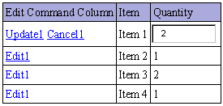
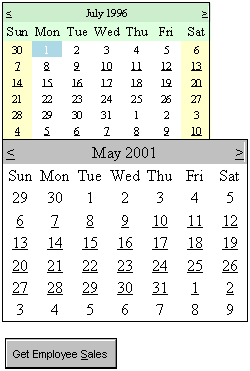
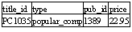

-5-
Database Controls
This chapter, which is based on databases, will probe into the
rudiments of handling data from a database program, i.e. Microsoft's SQLServer.
To ensure that the programs work as per our explanation, this database server
must be installed along with the samples that are provided along with the .NET
package. The details have been given in the installation section in the
Introduction chapter, with the aim of assisting you in installing this product
and the samples.
a.aspx
<%@ Import Namespace="System.Data" %>
<%@ Import Namespace="System.Data.SqlClient" %>
<html>
<script language="C#" runat=server>
void abc(Object s, EventArgs e)
{
SqlConnection c = new
SqlConnection("server=localhost;uid=sa;pwd=;database=pubs");
SqlDataAdapter co = new SqlDataAdapter("select * from Titles
", c);
DataSet d = new DataSet();
int i = co.Fill(d, "zzz");
Response.Write(i.ToString());
l.DataSource = d.Tables["zzz"].DefaultView;
l.DataBind();
}
</script>
<body>
<form action="a.aspx" runat="server">
<asp:button type=submit text="Fetch"
OnClick="abc" runat="server"/>
<ASP:DataGrid id="l" runat="server"/>
</form>
</body>
</html>
When the file a.aspx is loaded on, by providing the URL
http://localhost/a.aspx, the browser displays a blank screen with only one
button labeled Fetch. If you now click on the button, the same window shall get
filled up with data, in a well-formatted tabular manner.
Are you astonished? Well, the best way to comprehend the output
is, by analyzing the source file. In order to do so, we clicked on View-Source
and found that the program that we had run on the server, and the HTML file
generated, are as dissimilar as fish and fowl.
The asp:button of type 'submit', generates a submit button which
calls the function abc on the server, whenever we click on it. This function
first creates an object c, which is an instance of the class SqlConnection. All
database handling classes either belong to the System.Data namespace or to the
System.Data.SqlClient namespace.
The directive <%@ Import Namespace= is the ASP+ equivalent of
the C# keyword 'using'. Since we believe in the adage that 'brevity is the soul
of wit', wemake use of this directive and initialize it to the
System.Data.SqlClient and System.Data namespaces. We can include as many Import
directives in the file as we want.
To create an object of type SqlConnection, the constructor with
one parameter is called. This parameter is a string where we initialize some
words as follows:
• server to localhost
• uid to sa
• pwd to nothing
• database to pubs.
The class uses these values internally. The server provides
relevant details about the machine on which the SQLServer database is running
to SqlConnection. The relevance of these values is explained below:
Here, we have used localhost, which refers to the local machine
and not to a machine on the network.
A database cannot be accessed unless we identify ourselves. In
order to do so, we have to provide it with a user id and a password. So, the
word uid is used, which refers to the user id, and the word pwd is used to
refer to the password. SQLServer has only one pre-built user in the system
called sa, which does not require a password. Hence, in this case, uid is
initialized to sa and pwd is not assigned any value.
Finally, in general terms, a database is made up of tables where
all data is stored. In our program, we will be constantly working with only one
database called pubs. c now refers to this connection made to the pubs
database, on the local disk. Observe carefully that semi-colons separate the
name-value pairs in the string.
The next task in the sequence is to fetch data from the
database. To accomplish this, we need to be well informed and conversant with a
language that can handle a database, and also fetch the desired data. This
language is called SQL or Structured Query Language. SQL is a universal
language that works on all database servers and is not a trademark of any
database vendor. Thus, Microsoft, Oracle or any other database vendor, do not
possess the ownership rights of SQL.
In the SQL language, a Select statement fetches data from a
database. As mentioned earlier, data is stored in a table within rows and
columns. A row of the table is called a record and the columns are identified
as fields. Further, every table has a name, and the fields in it signify the
type of data that is stored within them.
The pubs database contains a table called titles. Writing an SQL
command as 'Select * from titles', will fetch us all the data from the titles
table. This is because the * signifies all the fields and records of a table.
As we want to display all the records from this table in the
browser window, we have to use this SQL select statement in ASP+. Prior to
that, we need to create one more class that understands SQL commands. This
class is called SqlDataAdapter, which belongs to one of the namespaces imported
in the file.
We call the constructor of SqlDataAdapter class with two
parameters; the SQL statement within double quotes i.e. "select * from
Titles"; and the connection object i.e. 'c'. This links up the SQL command
with the database connection.
So far, we have created two objects, the first of which contains
the connection details and second holds the SQL command. As we need to
accommodate the data that we retrieve from the table somewhere, we need one
more object that is of type DataSet. This object deals with data that comprises
of multiple rows and columns.
Now, we shall get down to real work. We need to fill up the
DataSet object with data. To do so, the SqlDataAdapter class provides us with a
function called Fill, which accepts two parameters. The first parameter is a
DataSet object 'd', and the second one is any string, zzz, which identifies the
table. This function returns an int, which informs us about the number of rows
added to the DataSet object. As there are 18 rows in the titles tables, Fill
stores 18 in the variable i. As before, we can use Response.Write function to
display the value stored in the variable i. But, since this function requires a
string, the ToString function from the int class is called to display this
value in the string format.
In the aspx file, besides the asp button, we have introduced a
new tag called <asp:DataGrid, having an id of l.
This tag is capable of displaying data in a grid form.
In the function abc, we are initializing the DataSource property
of l, i.e. a DataGrid to the
data that it should display. The DataSet object 'd' has a member called
'Tables', which is assigned the value of zzz. If you recheck the program, you
will find that the string zzz was provided to identify the DataSet. The
DefaultView member of 'Tables', returns a view of the data. It is this series
of statements that connects our DataGrid to our DataSet.
If we halt at this stage, no output will be displayed. To
display data on the screen, a function called DataBind from the DataGrid class,
has to be invoked. This function populates the DataGrid with data.
The DataBind function internally performs numerous tasks. The
programmers who wrote the code for this function obviously possessed an
extremely high IQ, since, it is no mean task to write a function that is
endowed with such a high level of complexity. This function firstly ascertains
the number of rows and columns in the result set. Accordingly, it creates an
HTML table with the specified number of rows and columns. Thereafter, it
retrieves the values from the result set and fills the table with all the data.
Effortlessly, we can now view the data from a table in the database, simply by
using one function.
In our opinion, the DataGrid control is extremely significant.
So, we shall spend a little more time in understanding this control in greater
detail, before shifting our focus to SQLServer. Since it is not our intention
to confuse you any further, we shall populate the Data Grid with static data.
We shall enter the data ourselves, rather than obtaining it from a database.
This DataGrid server control not only displays data in a tabular
form, but also consents to perform certain basic operations on it, such as
select, sort, page, edit, etc.
By default, the number of fields displayed in the control, are
equal to the number of columns found in the data source. The field names appear
at the top and all the values, irrespective of their data type, are rendered as
text labels in a default format.
a.aspx
<%@ Import Namespace="System.Data" %>
<html>
<script language="C#" runat="server">
void Page_Load(Object s, EventArgs e)
{
DataTable d = new DataTable();
DataColumn c = new DataColumn("Integer",
typeof(Int32));
DataColumnCollection c1 = d.Columns;
c1.Add(c);
d.Columns.Add(new DataColumn("Vijay", typeof(string)));
d.Columns.Add(new DataColumn("Sonal", typeof(bool)));
DataRow dr;
dr = d.NewRow();
dr[0] = 1;
dr[1] = "vijay1";
dr[2] = true;
d.Rows.Add(dr);
dr = d.NewRow();
dr[0] = 2;
dr[1] = "vijay2";
dr[2] = false;
d.Rows.Add(dr);
DataView dv = new DataView(d);
l.DataSource = dv;
l.DataBind();
}
</script>
<body>
<form runat=server>
<ASP:DataGrid id="l" runat="server"
BorderColor="red" BorderWidth="1"
GridLines="Both" CellPadding="3"
CellSpacing="4"
Font-Name="Verdana"
Font-Size="8pt" HeaderStyle-BackColor="#aaaadd"
/>
</form>
</body>
</html>
Output
As usual, the function Page_Load is called automatically. Here,
we first create an object d, which is an instance of the class DataTable. Since
every table has columns, a separate object c of type DataColumn class, is created
to represent a column. The constructor of the DataColumn class takes two
parameters:
• The first is the column name i.e.
Integer, enclosed within double quotes.
• The second is the data type of the
column.
The class int is internally known as Int32. The word 'typeof' is
a C# keyword, which returns an object of class Type. The syntax typeof(Int32)
places an object of class Type representing the Int32 datatype, as the second
parameter to the contructor.
An extremely large number of columns can be displayed in the
DataGrid. Therefore, we need some mechanism to keep track of all these columns.
This is where the Columns property which is available in the class DataTable,
comes handy. This property returns an instance to the DataColumnCollection
Object, which is stored in object c1. The Add function is called off the object
c1, to store the column c.
Similarly, we can add two or more columns to our Data Table. The
column named Vijay will contain data of type string, whereas, the column Sonal
can only hold the data of type bool. However this time, we sidestep the
DataColumnCollection statement and write these steps in one single statement.
You can choose whichever method you are most comfortable with.
Once the columns have been added, we have to introduce the rows
containing data for each of the column. To achieve this, we now create an
object dr, which is an instance of the class DataRow, to represent a row of
data. This object is then added to the DataGrid. The NewRow function creates a
blank row. So, before adding it, we have to populate the three columns with
some data.
The first column is represented by the variable dr[0], the
second by the variable dr[1], and the
third by the variable dr[2]. The square brackets are part of the syntax.
Thereafter, we initialize the first column to an int value of 1, the second
column to a string value of 'Vijay' and the third column to a bool value of
True. Once the values are assigned to every column, the row is added to the
table by calling the Add function in the Rows class of the DataTable.
We repeat the same procedure to add the second row. The
DataTable object now consists of three columns and two rows.
We need one more object, which is a DataView object. The constructor
of this object is provided with a DataTable object called 'd'. The DataSource
property within DataGrid, accepts a DataView object and indirectly maps it to
the DataTable object. Finally, DataBind is called to display the data within
the table.
The DataGrid control has many more attributes, such as,
foreground color, background color, spacing between columns, grid lines between
columns, and so on. These options are endless. You could spend a month
enhancing the look and feel of the DataGrid, however, we would advise you
against spending your quality time in this manner, at this stage.
a.aspx
<%@ Import Namespace="System.Data" %>
<html>
<script language="C#" runat="server">
void Page_Load(Object s, EventArgs e)
{
DataTable d = new DataTable();
DataColumn c = new DataColumn("Integer",
typeof(Int32));
DataColumnCollection c1 = d.Columns;
c1.Add(c);
d.Columns.Add(new DataColumn("bad", typeof(double)));
DataRow dr;
dr = d.NewRow();
dr[0] = 11;
dr[1] = 1.234567;
d.Rows.Add(dr);
dr = d.NewRow();
dr[0] = 2;
dr[1] = 4.3;
d.Rows.Add(dr);
DataView dv = new DataView(d);
l.DataSource = dv;
l.DataBind();
}
</script>
<body>
<form runat=server>
<ASP:DataGrid id="l" runat="server"
BorderColor="black" BorderWidth="1"
GridLines="Both" CellPadding="3" CellSpacing="0"
AutoGenerateColumns="false">
<Columns>
<asp:BoundColumn HeaderText="Price"
DataField="bad" DataFormatString="{0:c}"
ItemStyle-HorizontalAlign="right" />
<asp:BoundColumn HeaderText="vijay"
DataField="Integer" />
</Columns>
</asp:DataGrid>
</form>
</body>
</html>
Output
Most of the code in the function Page_Load remains the same,
except that we have removed one column completely and renamed the other column.
This is to make the program smaller in size. The data type of the second column
is 'double'. Hence, we can store values having decimal points in this column.
The <asp:DataGrid tag is given the same id of l, alongwith the other attributes of
BorderColor, BorderWidth, and Autogeneratedcolumns. If you observe carefully,
you will realise that the DataGrid tag does not end on the same line. The
forward slash is now missing. Instead, we have closed the tag after a couple of
lines, just as we did in the case of an HTML tag, using </asp:DataGrid>.
All statements inserted within the opening and the closing tag
relate to the same object. One of the
elements of the DataGrid object is 'property'. It is given the name Columns,
which is a reserved word with a special meaning, and it ends after two lines.
Within the property tag, we have another control called
<asp:BoundColumn, that represents the actual columns displayed. The new
values given here, override the Column properties created in the function abc.
The value given to HeaderText gets displayed as the column header, and
DataField represents the column name that is to be changed. The column called
'bad' has two additional properties:
• The first is DataFormatString, where
we want the currency field displayed, with two decimal places.
• The second is
ItemStyle-HorizontalAlign, which aligns the data to the right.
The control called BoundColumn influences the manner in which
columns are displayed.
a.aspx
<%@ Import Namespace="System.Data" %>
<html>
<script language="C#" runat="server">
void Page_Load(Object s, EventArgs e)
{
DataTable d = new DataTable();
d.Columns.Add(new DataColumn("c1",
typeof(Int32)));
d.Columns.Add(new DataColumn("c2", typeof(string)));
DataRow dr;
dr = d.NewRow();
dr[0] = 11;
dr[1] = "String 1";
d.Rows.Add(dr);
dr = d.NewRow();
dr[0] = 2;
dr[1] = "String 2";
d.Rows.Add(dr);
DataView dv = new DataView(d);
l.DataSource = dv;
l.DataBind();
}
</script>
<body>
<form runat=server>
<ASP:DataGrid id="l" runat="server"
GridLines="Both" AutoGenerateColumns="false">
<Columns>
<asp:HyperLinkColumn HeaderText="Text of Header"
DataNavigateUrlField ="c1" DataNavigateUrlFormatString
="a1.aspx?mukhi={0}"
DataTextField ="c2" Target="_new" />
</Columns>
</asp:DataGrid>
</form>
</body>
</html>
a1.aspx
<html>
<head>
<script language="C#" runat="server">
string s;
void Page_Load(Object sender, EventArgs e)
{
s=Request.QueryString["mukhi"];
}
</script>
</head>
<body>
You selected <%= s %>
</body>
</html>
Output
Output : when String 1 is selected
http://127.0.0.1/a1.aspx?mukhi=11
You selected 11
Output : when String 2 is selected
http://127.0.0.1/a1.aspx?mukhi=2
You selected 2
In the function Page_Load, we have two columns c1 and c2,
consisting of data types Int32 and string, respectively. Most of the code is
similar to the earlier program, except for a few changes in the variable names
and values.
We now introduce a new tag called <asp:HyperLinkColumn within
the property tag. The attribute HeaderText is used to display the column
heading. The most important attribute with the HyperLinkColumn control is
DataTextField, which is assigned a column name. The text in this column becomes
a hyperlink. DataTextField is initialized to the value of c2. Hence, String 1
and String 2 are displayed as hyperlinks on the table.
When we click on any of the hyperlinks, a URL is required for
navigation. We can decide on the format of this url by initializing the
attribute DataNavigateUrlFormatString to a value. In this case, we have
provided the value a1.aspx?'mukhi'={0}.
ASP+ automatically adds http://localhost/ to the value and
replaces {0} with the value of column c1. Thus, {0} is replaced by the contents
of column c1, depending on the string that is selected. In case of String 1,
the URL becomes http://localhost/a1.aspx?'mukhi'=11. Since Target is initialized to _new, it will open a new browser
window to display the contents of the file.
The program a1.aspx displays the value of the parameter mukhi.
This value is retrieved by using Request.QueryString with the parameter name,
and then it is stored in a string called 's'. The value is then displayed on
the screen using <%=.
Thus, we can use the tag HyperLinkColumn to convert values in a
column of a DataGrid, into a hyperlink. Although we can use as many of such
Column types as we like, however presently, as we are still learning the
concept, we have restricted ourselves to only one Column type. Hence, we are
not using BoundColumn in the same example. However, nothing stops you from
doing so.
By clicking on the hyperlink in the file a1.aspx, we could use
the value of 'mukhi' to load another series of records from a database. We can
add more code to the file a1.aspx if we so desire.
a.aspx
<%@ Import Namespace="System.Data" %>
<html>
<script language="C#" runat="server">
void Page_Load(Object s, EventArgs e)
{
DataTable d = new DataTable();
d.Columns.Add(new DataColumn("c1",
typeof(Int32)));
d.Columns.Add(new DataColumn("c2", typeof(string)));
DataRow dr;
dr = d.NewRow();
dr[0] = 11;
dr[1] = "String 1";
d.Rows.Add(dr);
dr = d.NewRow();
dr[0] = 2;
dr[1] = "String 2";
d.Rows.Add(dr);
DataView dv = new DataView(d);
l.DataSource = dv;
l.DataBind();
}
</script>
<body>
<form runat=server>
<ASP:DataGrid id="l" runat="server"
GridLines="Both" AutoGenerateColumns="true">
<Columns>
<asp:BoundColumn HeaderText="Vijay"
DataField="c1" />
<asp:BoundColumn HeaderText="mukhi"
DataField="c2"/>
</Columns>
</asp:DataGrid>
</form>
</body>
</html>
Output
Instead of two columns, we are now presented with four columns,
because the property called AutoGenerateColumns is initialized to True. This
modifies our DataGrid completely. We first see our Bound Columns 'Vijay' and
'mukhi', and then the columns that we have created in our DataTable, c1 and c2.
If the attributeAutoGenerateColumns is assigned the value of
False, as was the case in the earlier programs, the columns originally placed
in the DataTable get overridden by the new ones.
Session
Variables
a.aspx
<html>
<script language="C#" runat="server">
int i;
void Page_Load(Object sender, EventArgs e)
{
i = (int)Session["mukhi"];
}
</script>
<body>
<form runat=server>
<%= i %>
</form>
</body>
</html>
Output
Server Error in '/' Application.
-------------------------------------------------------------------------
Value null was found where an instance of an object was
required.
When the file is loaded in the browser, we get an application
error. Let us understand the cause for this.
We have used a free object called Session with the [] brackets,
to reference a word called 'mukhi'.The return value of this Statement is stored
in the variable i. Since it has generated a null reference error, it confirms
that the word 'mukhi' does not exist in the Session object. It can safely be
assumed that there is nothing wrong with our syntax.
a.aspx
<html>
<script language="C#" runat="server">
int i;
void Page_Load(Object sender, EventArgs e)
{
if ( Session["mukhi"] == null)
{
Response.Write("one<br>");
i = 1;
Session["mukhi"] = 20;
}
else
{
Response.Write("two<br>");
i = (int) Session["mukhi"] ;
}
}
</script>
<body>
<form runat=server>
<%= i %>
</form>
</body>
</html>
Output
one
1
Let us try to understand this program step by step. We request
you to run this program in the manner that we want you to, otherwise, our
explanations may appear incomprehensible to you. When we run the aspx file in
our browser, we get the output as displayed above.
The function Page_Load gets called, each time the page is sent
to the browser. The earlier program failed because the value returned by
Session["mukhi"], was null. Continuing on these lines, in the current
program, the 'if' statement results in True, since Session["mukhi"]
returns null. The Write function therefore displays one. Thereafter, the
variable i is given a new value of 1, and Session["mukhi"] is
initialized to 20.
Session['mukhi'] is initialized like any other variable, to a
value. Since it is not a variable, this statement creates a word or a variable
called 'mukhi', and links it with the running copy of your browser.
<%= i %> within the form tags, displays the value of i as
1.
When you click on the Refresh Button in your browser, it will
restart the procedure of requesting for the current file a.aspx from the
server. Since the page is to be sent over, the function Page_Load is called
once again. It is all the same, but this time, the 'if' condition with
Session["mukhi"], fails. Since we have assigned it a value of 20, the
session with 'mukhi' in square brackets, fetches the value of the variable
'mukhi'. Therefore, it is not null in this case. Hence, the output is as
follows:
Output
two
20
Since the 'else' block of 'if' statement is called, the value
two is displayed, and the value of i is displayed as 20, since 'mukhi' was
assigned this value earlier.
To summarize, Session["mukhi"'] creates a variable
called 'mukhi' in the first round, if it doesn't already exist. By default, the
value assigned to it is null, and hence, we have to initialize it to some
value. In future, 'mukhi'- the session variable can be used like any normal
variable.
What is so special about creating variables? Have we not created
enough of them?
It is important to realise that the session variables are
special. To prove this, start a fresh copy of the browser. To your utter
surprise, you will see One and 1 displayed on the screen again. When you click
on the Refresh button, you will see Two and 20.
This implies that ASP+ keeps track of the browser copies you are
working with while accessing the same file. Each copy of the browser has a
different value for 'mukhi'. Thus, 'mukhi' is a variable, but with a dash of
lime. Every time we start a new copy of the browser, we get a new copy of this
variable too. As a new browser starts a new session, all variables like 'mukhi'
that are associated with a session, get reinitialized to their initial values.
This functionality is akin to ASP+, having a million eyes to
monitor your activities, with every new copy of the browser. How it undertakes
supervision of this magnitude, is yet another story!
Given below is another program designed to make the concept of
sessions, more comprehensible for you.
a.aspx
<html>
<script language="C#" runat="server">
int i;
void Page_Load(Object sender, EventArgs e)
{
if ( Session["mukhi"] == null)
{
i = 0;
Session["mukhi"] = (int)i;
}
else
{
i = (int) Session["mukhi"] ;
i = i + 1;
Session["mukhi"] = i;
}
}
</script>
<body>
<form runat=server>
<%= i %>
</form>
</body>
</html>
Output
0
When we load the above program, we get to see the number zero in
the browser window. In case you witness a value of 21, you need to start a new
copy of the browser. This is because the session variable 'mukhi' already
exists with the current copy of the browser.
Each time we click on the Refresh button, the number displayed
is incremented by one. Once again, if you start a new copy of the browser, the
value displayed will again be zero. Now, click on the Refresh Button a couple
of times in the second copy, and then revert back to the first copy of the
browser. Here, the browser still displays the old value. Refresh will increment
this value, only by one. This confirms that there are two independent copies of
'mukhi', with their respective values associated with a particular copy of the
browser.
The concept of sessions demonstrates the standalone behavior of
data variables, depending upon the instance of a browser.
A Shopping Cart Example
We now apply this concept of sessions to create a shopping cart,
one of the most widely used applications on the Internet.
a.aspx
<%@ Import Namespace="System.Data" %>
<html>
<script language="C#" runat="server">
DataTable Cart;
DataView cv;
void Page_Load(Object sender, EventArgs e)
{
if (Session["zzz"] == null)
{
Cart = new DataTable();
Cart.Columns.Add(new DataColumn("Item", typeof(string)));
Cart.Columns.Add(new DataColumn("Price",
typeof(string)));
Session["zzz"] = Cart;
}
else
{
Cart = (DataTable)Session["zzz"];
}
cv = new DataView(Cart);
sc.DataSource = cv;
sc.DataBind();
if (!IsPostBack)
{
DataTable d = new DataTable();
d.Columns.Add(new DataColumn("c1", typeof(string)));
d.Columns.Add(new DataColumn("c2",
typeof(double)));
DataRow dr;
dr = d.NewRow();
dr[0] = "Product 1";
dr[1] = 11.3;
d.Rows.Add(dr);
dr = d.NewRow();
dr[0] = "Product 2";
dr[1] = 10.6;
d.Rows.Add(dr);
DataView dv = new DataView(d);
l.DataSource= dv;
l.DataBind();
}
}
void abc(Object sender, DataGridCommandEventArgs e)
{
DataRow dr = Cart.NewRow();
TableCell it = e.Item.Cells[2];
TableCell pr = e.Item.Cells[3];
string item = it.Text;
string price = pr.Text;
Response.Write(item + " " + price);
if (((LinkButton)e.CommandSource).CommandName ==
"AddToCart")
{
dr[0] = item;
dr[1] = price;
Cart.Rows.Add(dr);
}
else
{
cv.RowFilter = "item='"+item+"'";
if (cv.Count > 0)
{
cv.Delete(0);
}
cv.RowFilter = "";
}
sc.DataBind();
}
</script>
<body>
<form runat=server>
<ASP:DataGrid id="l" runat="server"
AutoGenerateColumns="false" OnItemCommand="abc">
<columns>
<asp:ButtonColumn HeaderText="Add to cart" Text="Add"
CommandName="AddToCart" />
<asp:ButtonColumn HeaderText="Remove from cart"
Text="Remove" CommandName="RemoveFromCart" />
<asp:BoundColumn HeaderText="Item"
DataField="c1"/>
<asp:BoundColumn HeaderText="Price"
DataField="c2" />
</Columns>
</asp:DataGrid>
<ASP:DataGrid id="sc" runat="server"/>
</form>
</body>
</html>
Output
Product 2 10.6
We have a DataGrid with an id of
l, and a property called OnItemCommand which is set to the function abc.
As before, we have the columns attribute followed by a tag
<asp:ButtonColumn, that is repeated twice. It has three attributes:
• The HeaderText attribute signifies
the column header that should be displayed. Therefore, the first column in the
DataGrid control shows 'Add to Cart',
and the second one exhibits 'Remove from cart'.
• Now that we are done with the column
heading, we concentrate on the data within the column. The second attribute
Text in the Button property decides the text that is to be displayed. This
value is repeated for all the rows of the table. Thus, the first column shows
Add and the second shows Remove. Every time we click on the text Add or Remove,
the function name stated in the attribute OnItemCommand, gets executed. Thus,
function abc is called.
• Shouldn't there be a way to figure
out as to which Button Command was clicked? The third attribute in the Button
property i.e. CommandName, does exactly this. It assigns a name to a button,
which we can refer to in our code later, to figure out which button was chosen.
Now, we proceed to the next two lines. We use the familiar
BoundColumn tag, which we had come across in one of the earlier programs. This
tag is used to add values contained in two columns c1 and c2 of the table, to
the DataGrid control. The HeaderText displays the column headings as Item and
Price, thus, resulting in a total of four columns.
A point to be noted here is that, within the properties tag, any
tag that ends with the word Column, ends up being a column in the DataGrid.
Another DataGrid Control having the id of sc, is added to the
page. You are free to add as many DataGrid controls as you like. The reason for
adding this control shall be explained in a short while.
As usual, the server calls the Page_Load function. The first
line in this function checks for the existence of the zzz session variable.
Since it is null, an object called Cart, of type DataTable, is created. Two
columns are added to this table with the labels of Item and Price, to hold
string values. Following this, Session["zzz"] = Cart; initializes the
zzz session variable to Cart.
A session is required at this point, because the user will be
adding and eliminating items from his shopping cart. A record of the items
currently present in the shopping cart, has to be maintained.
Since the first DataGrid control with the id of l, has a fixed number of records and
cannot be changed, the second DataGrid having the id of sc, is utilized to hold
the items added or removed by the user. The number of records contained in it,
keep varying constantly.
It is imperative to maintain this state information from one
copy of the browser to another. Therefore, we had initially created a DataTable
object with the two Columns of Item and Price, and stored it in the cart
object. No data is added to or deleted from this DataTable, unless the user
clicks on the Add or Remove Text. Further, this DataTable has to be created
only once, at the very beginning, so that a blank DataTable is displayed when
the user loads this file for the first time.
Output
When the user clicks on the Refresh button, or the page is again
requested from the server, the 'else' block is called, which initializes the
cart object to the values contained in zzz.
Irrespective of the statements being called, an object called
cv, which is an instance of the class DataView, is created every time. The
constructor of this class is called with the Cart object. The DataSource member
of the second DataGrid control named sc, is assigned to cv, thereby associating
the data within cv with the DataGrid Control. Since there are no records in the
shopping cart currently, DataGrid does not display any records.
Before we explore about filling up data in the second DataGrid
control, in greater detail, we need to populate the first one with some data.
Two columns, c1 and c2 with two records, are added to the DataTable object
called 'd'. As this data is to be inserted only once, we can place it either in
the 'if' block when the session variable holds a null value, or when IsPostBack
returns a value of False.
We prefer to employ the second method because the original
Microsoft sample uses it. You are at a liberty to choose whichever method suits
you. This is how the first DataGrid is supplied with data. Keep in mind that
this is a one-time activity. The GridControl displays these values on the
browser screen.
Each time we click on the Add or Remove text, the function abc
gets called. The second parameter to this function i.e.
DataGridCommandEventArgs e, is of importance here.
Since the text Add and Remove are repeated for every row, we
first need to identify the row that the user has clicked on.
A DataGrid is made up of a number of rows and columns, and we
want to identify the specific column when the row is known to us.
DataGridCommandEventArgs has a member called Item, which represents a row.
Thus, using e.Item, we can identify the row that the user has clicked on. This
row has four columns. The first two are ButtonColumns and the next two are
BoundColumns. We are interested in the values contained in the last two
columns. As the column numbering start from zero, the Cells[0] member in Items,
represents the first column. In the same manner, Cells[2] denotes the third Column
which contains the name of the product, and Cells[3] represents the fourth
column, which contains the price of the product.
The Cells member in Item, returns a TableCell object that
represents the data. Every TableCell object has a member called Text, which
returns the column value in the string format. Using Response.Write function,
we can display these column values in the browser.
The values are not returned directly, since they can belong to
any data type. The parameter e also has a member called CommandSource. The
return value is cast to a LinkButton, as we want to access a member called
CommandName within it. CommandName contains either AddToCart or RemoveFromCart,
depending upon the button that the user clicked on. This value is acquired from
the CommandName attribute of the ButtonControls. Thus, we can find out the
button that was clicked.
If the user clicks on Add, the newly created row with members
dr[0] and dr[1], is assigned the values held in item and price. Thereafter, the
Add function is used to add the row to the Cart object of DataTable.
In case the user clicks on Remove, the RowFilter member of cv,
which is the DataView class, is used to filter out or remove all records from
the DataGrid that do not meet the specified condition.
RowFilter takes a value in the form of 'fieldname = value'.
Hence, we have assigned it to 'item='Product 1' to ensure that DataGrid checks
records, matching this condition only. Once the records are filtered out, the
Count member in DataView is used to count the number of records present. If the
value is zero, then it signifies that there are no records matching the
condition. Hence, no changes are required to be made to the DataView.
If Count has a value greater than 0, the first record in the
filtered set is deleted, using the Delete function in cv. Once the records have
been modified, the filter is reset to null, resulting in its removal. DataBind
thereafter redisplays all the records in the shopping cart after omitting the
record that was deleted.
A filter does not physically remove any records. It merely hides
them for the moment. DataBind is used to redisplay the rows, excluding the
hidden ones. It is important to remember that all this happens on the server.
If it is hard for you to believe us, you can ascertain this for yourself, by
viewing the file received by the browser, by clicking on View-Source.
Templates
a.aspx
<%@ Import Namespace="System.Data" %>
<html>
<script language="C#" runat="server">
DataTable Cart;
DataView cv;
void Page_Load(Object sender, EventArgs e)
{
if (Session["zzz"] == null)
{
Cart = new DataTable();
Cart.Columns.Add(new DataColumn("Item", typeof(string)));
Cart.Columns.Add(new DataColumn("Price",
typeof(string)));
Session["zzz"] = Cart;
}
else
{
Cart = (DataTable)Session["zzz"];
}
cv = new DataView(Cart);
sc.DataSource = cv;
sc.DataBind();
if (!IsPostBack)
{
DataTable d = new DataTable();
d.Columns.Add(new DataColumn("c1", typeof(string)));
d.Columns.Add(new DataColumn("c2",
typeof(double)));
DataRow dr;
dr = d.NewRow();
dr[0] = "Product 1";
dr[1] = 11.3;
d.Rows.Add(dr);
dr = d.NewRow();
dr[0] = "Product 2";
dr[1] = 10.6;
d.Rows.Add(dr);
DataView dv = new DataView(d);
l.DataSource= dv;
l.DataBind();
}
}
void abc(Object sender, DataGridCommandEventArgs e)
{
DataRow dr = Cart.NewRow();
TableCell it = e.Item.Cells[1];
TableCell pr = e.Item.Cells[2];
string item = it.Text;
string price = pr.Text;
Response.Write(item + " " + price);
if (((LinkButton)e.CommandSource).CommandName ==
"AddToCart")
{
dr[0] = item;
dr[1] = price;
Cart.Rows.Add(dr);
}
else
{
cv.RowFilter = "item='"+item+"'";
if (cv.Count > 0)
{
cv.Delete(0);
}
cv.RowFilter = "";
}
sc.DataBind();
}
</script>
<body>
<form runat=server>
<asp:DataGrid id="l" runat="server"
BorderColor="black" BorderWidth="1"
GridLines="Both" CellPadding="3" CellSpacing="0"
Font-Name="Verdana" Font-Size="8pt" HeaderStyle-BackColor="#aaaadd"
AutoGenerateColumns="false" OnItemCommand="abc">
<columns>
<asp:TemplateColumn HeaderText="Add/Remove">
<ItemTemplate>
<asp:LinkButton ID=AddButton Text="Add"
CommandName="AddToCart" ForeColor="blue"
runat="server" />
<asp:LinkButton ID=RemoveButton Text="Remove"
CommandName="RemoveFromCart" ForeColor="blue"
runat="server" />
</ItemTemplate>
</asp:TemplateColumn>
<asp:BoundColumn HeaderText="Item"
DataField="c1"/>
<asp:BoundColumn HeaderText="Price"
DataField="c2" />
</columns>
</asp:DataGrid>
<ASP:DataGrid id="sc" runat="server"/>
</form>
</body>
</html>
Output
This program is very large in size, however, nothing much has
really changed since the earlier program. We have the first DataGrid containing
a large number of attributes, to make it appear fancy. This is akin to the
process of pleasing our companion of the opposite sex, who likes to look great,
and fancies everything in the world that can enhance her good looks further.
We have introduced a new tag called <asp:TemplateColumn, in
place of ButtonColumn. As this is the first column in the properties, we will
see the HeaderText displayed as Add/Remove, in the first column of the text. A
template column has a name, and it contains other tags such as LinkButton. The
LinkButton has an ID and some text, that is to be displayed in the column. The
colour attribute is used for setting the colour of the font. The CommandName,
as we have already seen, is used to reveal the Button that had been clicked.
Thus, we can add a number of entities into one column, in order to have greater
flexibility in deciding the column contents.
Thus, instead of having Add and Remove as two separate columns,
we have combined them in a single column, but with different Command Names.
Most of the code is not altered. The Cells parameter is reduced by one, as we
have one column less. Thus, templates
give us more flexibility in designing our DataGrid.
a.aspx
<%@ Import Namespace="System.Data" %>
<html>
<script language="C#" runat="server">
DataTable Cart;
DataView cv;
void Page_Load(Object sender, EventArgs e)
{
if (Session["zzz"] == null)
{
int nn;
Cart = new DataTable();
Cart.Columns.Add(new DataColumn("Qty",
typeof(string)));
Cart.Columns.Add(new DataColumn("Item",
typeof(string)));
Session["zzz"] = Cart;
for (int i=1; i<5; i++)
{
DataRow dr = Cart.NewRow();
nn=(i%2)+1;
dr[0] = nn.ToString();
dr[1] = "Item " + i.ToString();
Cart.Rows.Add(dr);
}
}
else
{
Cart = (DataTable)Session["zzz"];
}
cv = new DataView(Cart);
if (!IsPostBack)
{
bbb();
}
}
public void Edit(Object sender, DataGridCommandEventArgs e)
{
l. EditItemIndex = (int) e.Item.ItemIndex;
bbb();
}
public void Cancel(Object sender, DataGridCommandEventArgs e)
{
l.EditItemIndex = -1;
bbb();
}
public void Update(Object sender, DataGridCommandEventArgs e)
{
string item = e.Item.Cells[1].Text;
string qty =
((TextBox)e.Item.Cells[2].Controls[0]).Text;
cv.RowFilter = "Item='"+item+"'";
if (cv.Count > 0)
{
cv.Delete(0);
}
cv.RowFilter = "";
DataRow dr = Cart.NewRow();
dr[0] = qty;
dr[1] = item;
Cart.Rows.Add(dr);
l.EditItemIndex = -1;
bbb();
}
public void bbb()
{
l.DataSource = cv;
l.DataBind();
}
</script>
<form runat="server">
<asp:DataGrid id="l" runat="server"
BorderColor="black" BorderWidth="1"
CellPadding="3" Font-Name="Verdana"
Font-Size="8pt" HeaderStyle-BackColor="#aaaadd"
OnEditCommand="Edit" OnCancelCommand="Cancel"
OnUpdateCommand ="Update" AutoGenerateColumns="false">
<Columns>
<asp:EditCommandColumn EditText="Edit1"
CancelText="Cancel1" UpdateText="Update1"
ItemStyle-Wrap="false" HeaderText="Edit Command Column"
HeaderStyle-Wrap="false"/>
<asp:BoundColumn HeaderText="Item"
ReadOnly="true" DataField="Item"/>
<asp:BoundColumn HeaderText="Quantity"
DataField="Qty"/>
</columns>
</asp:DataGrid>
</form>
</body>
</html>
The above program allows us to edit data that is present in a
DataGrid. As usual, we have our DataGrid with an id of l, having a number of attributes. We have added three
more attributes in addition to the regular ones, which we shall elucidate while
discussing the program.
In the property tag, we have a newly introduced tag called
<asp:EditCommandColumn. As this is placed first in sequence in the column
definition, it is displayed as the first column of our DataGrid. The HeaderText
is displayed at the top of the column as the column header, and the other
attributes of EditText, UpdateText and CancelText have been assigned string
values. By default, the value 'Edit1' assigned to EditText, is displayed on the
screen.
The other two columns are inserted using BoundColumns. We will
explain the attributes given to them, in a short while.
As the Page_Load function is the first function to be called,
the DataGrid Control gets populated with values. There are four rows and three
columns. The EditCommandColumn gets repeated for every new row that is inserted
into the grid.
The Item field has values displayed in a chronological order,
whereas, the Quantity field has values that depend on the result of dividing
the remainder value by 2 + 1.
Numbers cannot be inserted into the columns, because the columns
are defined to contain string values. Thus, the ToString function is used to
convert the integer values into strings. The modus operandi of using a 'for'
loop to populate fields with values, has been borrowed from the Microsoft
samples.
The output in browser window is shown below.
Output
If you click on Edit1 in any of the rows, the text will get
replaced with Update1 and Cancel1. These values were assigned to UpdateText and
CancelText attributes in the EditCommandControl. Further, instead of static
text being displayed, the value assigned to quantity in the current row, is
displayed in an editable textbox.
Output

The above output is displayed, since the function Edit, gets
called when we click on Edit1. This is so because the attribute OnEditCommand
is initialized to Edit in the DataGrid Control. This function has only one line
l. EditItemIndex = (int) e.Item.ItemIndex;
It, thereafter, calls a function named bbb.
Response.Write can be used to display the value of
e.Item.ItemIndex. This value displays the record number of the rows that we
clicked upon. So, as the numbering starts from 0, Item 1 will have a record number
of 0, Item 2 will have the ItemIndex of
1, and so on.
The task assigned to the Edit function is to set the value of
the EditItemIndex member of the DataGrid to the record number. Hence, it is
initialized to the current record number. This allows editing of the fields in
the current row. The Quantity field is the only field that is currently
editable, since the readonly property of the item field, has been set to True.
Thereafter, the function bbb is called, which associates DataSource with the DataGrid
Control and calls DataBind. As we have to use this segment of code repeatedly
at various places in the program, we have placed it in a separate function.
Any changes made to the Quantity field, are preserved when we
click on Update1. Update1 is connected with the function Update, using the
attribute OnUpdateCommand. We intend retrieving the values that the user
enters, and to add them to the DataGrid.
Thus, e.item.Cell[1].Text retrieves the text available in column
2, which is the Item column. Further, e.item.Cell[2].Text does the same for
column 3, which is the Quantity Column.
Hence, assuming that you clicked on Update for Item 1,
e.item.Cell[1].Text will contain Item 1. But, to retrieve values from the
Quantity field, we will have to use one more level of indirection. This is
because the value is contained in an edit box. So, we use Controls[0] for the
control in this column. Thereafter, the Text member in the control, is used to
return the text contained in it.
Thereafter, we use the same process as described earlier. That
is:
• filter the record that matches the
item, i.e. item="Item 1"
• delete the old record
• add a new record at the end, with
the new values contained in the Item and Quantity fields. Since these values
remain the same, the resultant effect would be that the record would be moved
to the end.
We set the value of EditItemIndex to -1 to avoid the values
being displayed in the edit textbox. Any value other than -1, will force ASP+
to display an editbox for the value 'long' with the record number, thereby,
allowing the text to be edited.
When the user clicks on Cancel, the Cancel function is called.
It means that the changes incorporated by the user, are to be cancelled and not
to be displayed in the DataGrid. So, we simply set EditItemIndex to -1, to undo
any editing that has been carried out.
a.aspx
<%@ Import Namespace="System.Data" %>
<html>
<script language="C#" runat="server">
void Page_Load(Object s, EventArgs e)
{
DataTable d = new DataTable();
d.Columns.Add(new DataColumn("c1",
typeof(Int32)));
d.Columns.Add(new DataColumn("c2", typeof(string)));
DataRow dr;
dr = d.NewRow();
dr[0] = 11;
dr[1] = "String 1";
d.Rows.Add(dr);
dr = d.NewRow();
dr[0] = 2;
dr[1] = "String 2";
d.Rows.Add(dr);
DataView dv = new DataView(d);
l.DataSource = dv;
l.DataBind();
}
void abc(Object sender, EventArgs e)
{
l.Columns[1].Visible = !l.Columns[1].Visible;
l1.Text = "Column 1's visible property is " + l.Columns[1].Visible.ToString();
}
</script>
<body>
<form runat=server>
<ASP:DataGrid id="l" runat="server"
GridLines="Both" AutoGenerateColumns="false">
<columns>
<asp:BoundColumn HeaderText="vijay"
DataField="c1" />
<asp:BoundColumn HeaderText="mukhi"
DataField="c2"/>
</columns>
</asp:DataGrid>
<asp:Button Text="Change" OnClick="abc"
runat="server" />
<asp:Label id="l1" runat="server" />
</form>
</body>
</html>
Output
In the above example, we are altering the visibility of a
column. Just like before, we have two BoundColumns, c1 and c2 in a DataGrid l, having the column headings of
'vijay' and 'mukhi'. Further, a label
l1 and a button with the label of 'Change', are added to the page.
Irrespective of whether column 1 is visible or not, the label l1 displays a text message. The
button calls the function abc whenever the user clicks on it.
In the function abc, we access the columns in the
DataGridControl, by using the member Columns and stating the column number in
[] brackets. As the numbering within square brackets start from 0, Columns[1]
refers to the second column, which has the title of 'mukhi'.
Every column object has a member called Visible, which is set to
True or False, depending upon whether we want that column to be visible or not.
The ! sign changes false to true and true to false. Initially, the Visible
member of Column 1 will be True, hence, the right hand side of the 'equal to'
sign returns True. The ! operator which precedes it now, makes it False. This
value is then reassigned to the Visible member, as a result of which, the column
now disappears from the screen. The text in the label also gets updated.
Output
Column 1's
visible property is False
If we click on the button again, the value of Visible property
gets toggled. Thus, we have complete control over the visibility of columns in
a DataGrid.
a.aspx
<%@ Import Namespace="System.Data" %>
<html>
<script language="C#" runat="server">
string s ;
void Page_Load(Object sender, EventArgs e)
{
bbb();
}
void abc(Object sender, DataGridSortCommandEventArgs e)
{
s = (string)e.SortExpression;
bbb();
}
void bbb()
{
DataTable d = new DataTable();
d.Columns.Add(new DataColumn("c1",
typeof(Int32)));
d.Columns.Add(new DataColumn("c2", typeof(string)));
DataRow dr;
dr = d.NewRow();
dr[0] = 1;
dr[1] = "String 3";
d.Rows.Add(dr);
dr = d.NewRow();
dr[0] = 2;
dr[1] = "String 2";
d.Rows.Add(dr);
dr = d.NewRow();
dr[0] = 3;
dr[1] = "String 1";
d.Rows.Add(dr);
DataView dv = new DataView(d);
dv.Sort = s;
l.DataSource = dv;
l.DataBind();
}
</script>
<body>
<form runat=server>
<ASP:DataGrid id="l" runat="server"
AllowSorting="true" OnSortCommand="abc" />
</form>
</body>
</html>
Output
The above example shows us how we can sort a particular column
in a DataGrid. The DataGrid control with the id of l, has an attribute called AllowSorting set to True.
Also, when the user clicks on the column, the function abc is called. Instead
of positioning all the code in Page_Load, we have placed it in a function
called bbb. Page_Load calls this function.
In bbb, a DataTable consisting of two columns and three rows, is
created. A DataView instance 'dv' is created with the Data Table 'd' as a
parameter to its constructor. Once the object is created, we use a member of
this object called Sort, and initialize it to the value stored in the string s.
At the moment, there is no value in the string s. Hence, Sort is assigned a
value of null.
Since the process of sorting is executed on columns, the column
names get underlined, i.e. they become hyperlinks when they are displayed. When
we click on the column c2, the function abc will get called. The parameter 'e'
of type DataGridSortCommandEventArgs has a member called SortExpression, which
contains the name of the column that we click on. We store this value in a
variable called 's', and then call the function bbb.
Before redisplaying the data, the Sort member of DataView is
again initialized to 's', which now holds the column name, whose data is to be
sorted. Thus, the data within this column is shown in a sorted order in our
DataGrid.
Table
Cells
a.aspx
<html>
<head>
<script language="C#" runat="server">
void Page_Load(Object s, EventArgs e)
{
for (int j=0; j<3; j++)
{
TableRow r = new TableRow();
for (int i=0; i< 2; i++)
{
TableCell c = new TableCell();
c.Controls.Add(new LiteralControl("row no " +
j.ToString() + ", coll no " + i.ToString()));
r.Cells.Add(c);
}
t.Rows.Add(r);
}
}
</script>
</head>
<body>
<form runat=server>
<asp:Table id="t" CellPadding=5 CellSpacing=0
BorderColor="black" BorderWidth="1"
Gridlines="Both" runat="server"/>
</form>
</body>
</html>
Output
The above program demonstrates how tables can be populated with
data in ASP+. We use <asp:Table control, with an id of 't', to which rows
and columns are to be added. The spacing between the cells in the table, and
the other display features of tables are given by initializing the attributes
supported by this control.
Page_Load function contains a 'for' loop that will be executed
thrice. Within this loop construct, a new object 'r' which looks like TableRow,
is created. Every row is made up of
columns or cells. A cell is created using an independent class called
TableCell. Here, since we require two cells per row, we have incorporated one
more for the loop, which repeats twice within the loop. This loop first creates
a TableCell called 'c'. Then, using the Add function of the TableCell member
Controls, the cell is assigned a string value or a literal. The Add function in
the Cell member of r called TableRow, adds this cell to the row. This is done
twice, as we want two cells per row. Once the row is ready, it is added to the
table, using the Add function of the Row member in the Table. Since the loop
has a count of 3, 3 rows are added to the Table. Thus, finally we obtain 3 rows
containing 2 columns each, with a literal for each of the columns.
This is one more way to add data to a table.
Paging
a.aspx
<%@ Import Namespace="System.Data" %>
<html>
<script language="C#" runat="server">
void Page_Load(Object sender, EventArgs e)
{
if (c.Checked)
l.PagerStyle.Mode=PagerMode.NumericPages;
else
l.PagerStyle.Mode=PagerMode.NextPrev;
bbb();
}
void abc(Object sender, DataGridPageChangedEventArgs e)
{
Response.Write("hi");
l.CurrentPageIndex = e.NewPageIndex;
bbb();
}
void bbb()
{
DataTable d = new DataTable();
d.Columns.Add(new DataColumn("c1",
typeof(Int32)));
d.Columns.Add(new DataColumn("c2", typeof(string)));
DataRow dr;
for (int i = 0; i < 200; i++)
{
dr = d.NewRow();
dr[0] = i;
dr[1] = "Item " + i.ToString();
d.Rows.Add(dr);
}
DataView dv = new DataView(d);
l.DataSource = dv;
l.DataBind();
l1.Text = "CurrentPageIndex is " + l.CurrentPageIndex +
"PageCount is " + l.PageCount;
}
</script>
<body>
<form runat=server>
<ASP:DataGrid id="l" runat="server"
AllowPaging="True" PageSize="10"
PagerStyle-Mode="NumericPages"
PagerStyle-HorizontalAlign="Right"
PagerStyle-NextPageText="Next1"
PagerStyle-PrevPageText="Prev1" OnPageIndexChanged="abc"
/>
<p>
<asp:Checkbox id="c" runat="server"
Text="Show numeric page navigation buttons"
AutoPostBack="true" />
<p>
<asp:Label id="l1" runat="server"
/><br>
</form>
</body>
</html>
Output
The DataGrid control contains a new set of attributes, two of
them being:
• AllowPaging, which is set to True.
• PageSize, which is assigned a value
of 10. This controls the number of records that are displayed on one page.
The function bbb called by Page_Load, has a 'for' loop to facilitate addition of 200
records into our DataGrid. Then, the text in the label l1 is changed to display the value of two DataGrid
members, namely, the CurrentPageIndex and the PageCount. The PageCount member
contains the total number of pages. As the PageSize is 10, (i.e. 10 records are
to be displayed on one page), the total number of pages for 200 records becomes
20. Also, since paging has been allowed, the values given to the attributes of
PagerStyle-NextPageText and PagerStyle-PrevPageText, reflect Next1 and Prev1 as
hyperlinks in the table.
A check box is displayed below the table and it is currently
unselected. Whenever we click on the checkbox, function Page_Load gets called,
since the AutoPostBack variable is set to True. The 'if' condition in
Page_Load, checks whether the checkbox has been checked or not. This is
verified by the value stored in the boolean member Checked.
• If it is checked, then we set a
member of the DataGrid, PagerStyle.Mode to a value of PagerMode.NumericPages
• If it is not checked, it is set to a
value of PagerMode.NextPrev.
This property decides as to which of the two pager styles is to
be used. Since the checkbox is initially unchecked, the default style is PagerMode.NextPrev,
where we see two hyperlinks named Next1 and Prev1, which help us to navigate
page by page. The second style uses page numbers to scroll through the pages.
Since we have 20 pages, the numbers 1 to 10 are displayed along with dots ....
As we keep clicking, the
CurrentyPageIndex that started at zero, either increases by one or decreases by
one, depending upon the link that we click on.
The function abc has no significant role to play, since it calls
the function bbb once again, to display the new set of data. The object e that looks like
DataGridPageChangedEventArgs has a member NewPageIndex that internally keeps a
record of the data it has currently displayed, and the set of data that is to
be displayed next. Hence the value contained in CurrentPageIndex changes as it
is initialised to NewPageIndex.
a.aspx
<%@ Import Namespace="System.Data" %>
<html>
<script language="C#" runat="server">
void Page_Load(Object sender, EventArgs e)
{
bbb();
}
void pqr(Object sender, DataGridPageChangedEventArgs e)
{
l.CurrentPageIndex = e.NewPageIndex;
bbb();
}
void abc(Object s, EventArgs e)
{
String arg = ((LinkButton)s).CommandArgument;
if ( arg == "next")
{
if (l.CurrentPageIndex < (l.PageCount - 1))
l.CurrentPageIndex ++;
}
else if ( arg == "prev")
{
if (l.CurrentPageIndex > 0)
l.CurrentPageIndex --;
}
else if ( arg == "last")
{
l.CurrentPageIndex = (l.PageCount - 1);
}
else
l.CurrentPageIndex = Convert.ToInt32(arg);
bbb();
}
void bbb()
{
DataTable d = new DataTable();
d.Columns.Add(new DataColumn("c1",
typeof(Int32)));
d.Columns.Add(new DataColumn("c2", typeof(string)));
DataRow dr;
for (int i = 0; i < 200; i++)
{
dr = d.NewRow();
dr[0] = i;
dr[1] = "Item " + i.ToString();
d.Rows.Add(dr);
}
DataView dv = new DataView(d);
l.DataSource = dv;
l.DataBind();
l1.Text = "CurrentPageIndex is " + l.CurrentPageIndex +
"PageCount is " + l.PageCount;
}
</script>
<body>
<form runat=server>
<ASP:DataGrid id="l" runat="server"
AllowPaging="True" PageSize="10"
OnPageIndexChanged="pqr"/>
<p>
<asp:LinkButton runat="server" Text="Previous
page"
CommandArgument="prev" OnClick="abc" />
<asp:LinkButton runat="server" Text="Next
page" CommandArgument="next" OnClick="abc" />
<asp:LinkButton runat="server" Text="Go to Page
8" CommandArgument="7" OnClick="abc" />
<asp:LinkButton runat="server" Text="Go to the
first page" CommandArgument="0" OnClick="abc" />
<asp:LinkButton runat="server" Text="Go to the
last page" CommandArgument="last" OnClick="abc" />
<p>
<asp:Label id="l1" runat="server"
/><br>
</form>
</body>
</html>
Output
Previous page Next
page Go to Page 8 Go to the first page
Go to the last page
CurrentPageIndex is 0PageCount is 20
In the earlier example, the DataGridControl was totally in
command, since we had used the attributes that it contained. In this program,
we would like to build our own user interface for paging.
To do so, we have five LinkButtons with different texts for
each, but we call the same function abc. In addition to this, there is a
CommandArgument attribute, which is initialized to a different value for each
of them.
Thus, when the page is loaded with the values, the Text is
displayed as hyper links.
Notice that the DataGrid Control shows
the less than (<) and greater than (>) symbols, which too can be
imlemented to facilitate movement between pages.
When we click on the Text defined for the LinkButton, the
function abc is called. In this function, we first need to extract the command
argument. To do so, the first paramter, s of type Object, is used. This object
is cast to a LinkButton class, and the data within the CommandArgument member
is retrieved. The value is stored in a String variable called arg.
If we click on the first button labeled 'Previous page', the
variable arg will hold the value of prev, and so on. If the value of arg is
prev, a check is performed on the CurrentPageIndex to ascertain if it is
greater than zero. If so, its value is reduced by 1, thus, showing the records
on the previous page.
Finally, it is the value that is stored in l.CurrentPageIndex, that displays
the relevant page. Thus, if we change the value in this member to 3, we will
see page 4 (number count starts from 0). For the last page, we pick up the
value in the PageCount member and reduce it by 1. Note, that the arg is a
string variable. Hence, to assign a value to CurrentPageIndex, the ToInt32
function from the Convert class has to be used.
This feature proves to be very useful, when a table contains a
large number of records that are to be displayed. So, whenever we display
records from a database, it makes more sense to fetch the relevant data in
small chunks, instead of fetching them all in one stroke.
Data
Manipulation
a.aspx
<%@ Import Namespace="System.Data" %>
<%@ Import Namespace="System.Data.SqlClient" %>
<html>
<head>
<script language="C#" runat="server">
void abc(Object sender, EventArgs e)
{
SqlConnection c;
c = new
SqlConnection("server=localhost;uid=sa;pwd=;database=pubs");
SqlCommand co = new SqlCommand("Create Table a1 (name
char(10),vno int)", c);
c.Open();
co.ExecuteNonQuery();
}
</script>
</head>
<body>
<form runat=server>
<asp:Button OnClick="abc" text="click"
runat=server/>
</form>
</body>
</html>
Structured Query Language (SQL) is commonly used to work with
data in a database. The next few programs will concentrate on adding, modifying
and deleting data, using this language. We will start by creating a very simple
table.
The above program, when loaded, shows a button in the browser
window. When we click on the button, nothing apparently happens.
In the function abc, c is an SqlConnection object. All necessary
parameters are provided to establish a connection to the pubs database. Next,
an SQL command has to be given to create a table. For this, we need a Command
object called co, that accepts an SQL statement to be executed. Earlier, we
used a Select statement. Here, we use a Create table statement.
In the SQL Create statement, we first specify the name of the
table that is to be created. In our case, the name is a1. Thereafter, we give
the names of the fields and the datatype for the values that are to be stored
within them, in brackets. In this case, the table is structured to contain two
fields called name and vno, and their data types are specified as character and
integer, respectively. Moreover, with the char datatype, we have specified the
number 10 in brackets, which signifies the length of the field.
Once the ingredients are in place, we open a connection to the
database server, by calling a function called Open in the SqlConnection Object.
The function connects to the database residing on the server cited, and checks
whether we have a valid User id and password to use SQL Server or not. An error
check is normally performed here to determine success or failure. Since we have
decided to avoid error checks for the time being, we continue on the assumption
that the connection has been established successfully.
Finally, the function ExecuteNonQuery from SqlCommand object, is
executed. This function executes the SQL Create command. The words NonQuery
signify that we are dealing with a SQL statement that does not return data, but
alters the database instead.
To check whether our table has been created or not, we click on
Start, Programs, Microsoft SQL Server, Query Analyzer. Thereafter, we click on
the OK button in the 'Connect to SQL Server' dialog box. Once the connection
with the computer has been established, we see a window with a list of
databases in the left windowpane. Since our table has been created in a
database called pubs, we click on the + sign in front of the database pubs, and
then on the + in front of User Tables. Here, we catch sight of a list of tables
in which, a1 is displayed as the first table. The name given to the table is
dbo.a1. You will also witness the titles tables that we had used earlier, as
dbo.titles, which happens to be the last entry in the list. Click on the + of
a1, and then on Columns, to see the two columns given as name and vno.
When we click with the right mouse button on the table named a1,
a menu pops up. From this menu, select the option Open, to display the data in
the table. Our table has no data so far.
a.aspx
<%@ Import Namespace="System.Data" %>
<%@ Import Namespace="System.Data.SqlClient" %>
<html>
<head>
<script language="C#" runat="server">
void abc(Object sender, EventArgs e)
{
SqlConnection c;
c = new SqlConnection("server=localhost;uid=sa;pwd=;database=pubs");
SqlCommand co = new SqlCommand("Insert into a1 values
('vijay' , 2)", c);
c.Open();
co.ExecuteNonQuery();
}
</script>
</head>
<body>
<form runat=server>
<asp:Button OnClick="abc" text="click"
runat=server/>
</form>
</body>
</html>
The above program adds one record into the table a1. Use the
program Query Analyzer to verify the result.
In this program, we have replaced the Create Table statement
with an Insert command. The syntax of this command makes it mandatory for us to
use the word 'into', followed by the name of the table, and finally followed by
the word 'values'. Thus, the statement becomes 'Insert into a1 values'.
Thereafter, the values to be inserted in the table are enclosed within
brackets. As the first field is a character field of length 10, we place its
value 'vijay' within single inverted commas. In the case of numbers, the single
quotes are not required. The data values are required to be separated by
commas. The final outcome is a new record with values 'vijay' and 2, added to
our table a1.
These rules have been framed by the inventors of the SQL
language, and are to be strictly adhered to, if you want to use the language.
a.aspx
<%@ Import Namespace="System.Data" %>
<%@ Import Namespace="System.Data.SqlClient" %>
<html>
<head>
<script language="C#" runat="server">
void abc(Object sender, EventArgs e)
{
SqlConnection c;
c = new
SqlConnection("server=localhost;uid=sa;pwd=;database=pubs");
string s = "Insert into a1 values ('" + aa.Text +
"' , " + bb.Text + ")";
Response.Write(s);
SqlCommand co = new SqlCommand(s, c);
c.Open();
co.ExecuteNonQuery();
}
</script>
</head>
<body>
<form runat=server>
First Name : <asp:TextBox id=aa runat=server/> <br>
Vno: <asp:TextBox id=bb runat=server/><br>
<asp:Button OnClick="abc" text="click"
runat=server/>
</form>
</body>
</html>
Output
Insert into a1 values ('mukhi' , 22)
Most of us detest static values, and seek excitement in things
that are dynamic and challenging. Programmers too prefer their code to be
dynamic.
This program accepts data in two textboxes and adds them to the
database. The two textboxes have ids of aa and bb, respectively. The data
entered in them is 'mukhi' and 22. When the button is clicked, the function abc
is called. This function creates a string 's' that concatenates the Text
attributes of the textboxes, and passes it on to the Insert command.
As a result, the values contained in the textboxes get placed as
the data values in the Insert command. This makes the insert statement dynamic,
wherein, the data that is entered in the text boxes, has now been added into
the database. To provide evidence of this fact, we have displayed the Insert
statement that is created internally in the browser.
a.aspx
<%@ Import Namespace="System.Data" %>
<%@ Import Namespace="System.Data.SqlClient" %>
<html>
<head>
<script language="C#" runat="server">
void abc(Object sender, EventArgs e)
{
SqlConnection c;
c = new
SqlConnection("server=localhost;uid=sa;pwd=;database=pubs");
string s = "Update a1 set name = '" + aa.Text + "' where vno =" +
bb.Text ;
Response.Write(s);
SqlCommand co = new SqlCommand(s, c);
c.Open();
co.ExecuteNonQuery();
}
</script>
</head>
<body>
<form runat=server>
First Name : <asp:TextBox id=aa runat=server/> <br>
Vno: <asp:TextBox id=bb runat=server/><br>
<asp:Button OnClick="abc" text="click"
runat=server/>
</form>
</body></html>
Output
Update a1 set name = 'sonal' where vno =2
This program is almost identical to the earlier one, except for
one single variation. An Update statement has now replaced the Insert
statement.
This statement requires the name of the table, followed by the
name of the field that is to be changed, and finally, the value to which the
field is to be updated. If we do not use the
'where' clause, all records in the table will get modified to the new
value. Since this is not what is actually desired, we add the where clause,
which acts like a filter. Now, only those records that meet the specified
condition, get affected. So, the field vno that has a value of 2, will get
modified.
In the same way, you can try the delete statement. Delete
removes records from a table. Thus, the SQL statement 'Delete from a1 where vno
= 2' will remove all records whose vno field has a value of 2.
a.aspx
<%@ Import Namespace="System.Data" %>
<%@ Import Namespace="System.Data.SqlClient" %>
<html>
<script language="C#" runat=server>
void abc(Object se, EventArgs e)
{
SqlConnection c = new
SqlConnection("server=localhost;uid=sa;pwd=;database=pubs");
string s = "select * from authors where state = '" +
aa.Value + "'";
Response.Write(s);
SqlDataAdapter co = new SqlDataAdapter(s, c);
DataSet d = new DataSet();
co.Fill(d, "zzz");
l.DataSource = d.Tables["zzz"].DefaultView;
l.DataBind();
}
</script>
<body>
<form action="a.aspx" runat="server">
<select id="aa" runat="server">
<option>CA</option>
<option>IN</option>
<option>KS</option>
<option>MD</option>
<option>MI</option>
<option>OR</option>
<option>TN</option>
<option>UT</option>
</select>
<asp:button type=submit text="Fetch"
OnClick="abc" runat="server"/>
<ASP:DataGrid id="l" runat="server"/>
</form>
</body>
</html>
Output
select * from authors where state = 'IN'
Here, the earlier program has been made more dynamic. We used
the HTML tag called 'select', to fill up a listbox with the abbreviated names
of the states. When we choose a state and click on the button labeled 'Fetch',
the function abc gets called. We have used the Value attribute of the select
tag, to dynamically figure out the name of the state. This is then added to the
Select statement. Thus, depending upon the state that the user selects, the
records from the authors table that match the specified state, are displayed.
a.aspx
<%@ Import Namespace="System.Data" %>
<%@ Import Namespace="System.Data.SqlClient" %>
<html>
<script language="C#" runat=server>
void abc(Object se, EventArgs e)
{
SqlConnection c = new
SqlConnection("server=localhost;uid=sa;pwd=;database=pubs");
SqlDataAdapter co = new SqlDataAdapter("select * from
Authors where state = @zzz", c);
SqlParameter p = new SqlParameter("@zzz",
SqlDbType.VarChar, 2);
co.SelectCommand.Parameters.Add(p);
co.SelectCommand.Parameters["@zzz"].Value = aa.Value;
DataSet d = new DataSet();
co.Fill(d, "zzz");
l.DataSource = d.Tables["zzz"].DefaultView;
l.DataBind();
}
</script>
<body>
<form action="a.aspx" runat="server">
<select id="aa" runat="server">
<option>CA</option>
<option>IN</option>
<option>KS</option>
<option>MD</option>
<option>MI</option>
<option>OR</option>
<option>TN</option>
<option>UT</option>
</select>
<asp:button type=submit text="Fetch"
OnClick="abc" runat="server"/>
<ASP:DataGrid id="l" MaintainState="false"
runat="server"/>
</form>
</body>
</html>
This program works in the same manner as the earlier program,
but theoretically, it is supposedly faster than the earlier program. Let us
understand the reasoning behind it.
The select statement passed to the SqlDataAdapter has a 'where'
clause that contains a name zzz, beginning with an @ sign. Earlier, we had used
the value member of the TextBox. Any word that begins with @ is called a
placeholder. So, even though the name of the state has not been acquired at
this stage, we are free to pass an incomplete Select statement to the
constructor.
Since the Select is incomplete, we create an object of type
SqlParameter, whose constructor requires three parameters:
• The first parameter is the
placeholder, zzz, used in the select statement.
• The second parameter is the data
type of the field. In our case, since zzz is a placeholder for the state field,
and the data type of this column is VarChar, we enter the second parameter as
SqlDbType.VarChar. VarChar is another word for characters or a string.
• The third last parameter is given
the value of 2, which represents the width of the column.
We can have as many placeholders as we like, in a single select
statement. The only restriction here is that they must be registered or added,
using the Add function.
The SqlDataAdapter class has a member called SelectCommand of
the SqlCommand datatype. This class has a member called Parameter of data type
SqlParameters, which contains a function called Add. Now that we have registered
our placeholder zzz, we need to assign it a value. The next line uses the []
brackets syntax to inform ASP+ about the placeholder @zzz, and also alerts it
to the fact that, it will be replaced by the value selected in the listbox
named aa.
So, how does all the above, help our program run faster? It
should logically slow things down.
When we submit a Select statement or for that matter, any SQL
statement, a lot of activity takes place behind the scene. SQLServer performs a
variety of checks.
• The syntax of the statement is check
to ascertain whether it abides by all the rules of SQL. This consumes some
time.
• Then, it checks for the table given
in the statement in its database, eg. titles.
• Next, the fields mentioned in the
statement are looked up, in the specified table.
• Thereafter, it checks whether the
user, sa, has a right to access each of the entities.
• Once the above entities are verified
and found to be satisfactory, the database server then figures out as to how
the select statement should be executed. This is called the execution plan.
The intelligence of a database lies in the execution plan. Once
the plan is ready, the select statement is executed. This execution plan is
independent of the parameters passed to the 'where' clause.
It is a much better idea to execute all the actions up to the
execution plan, only once. Thereafter, use it, for every SQL statement that
follows, rather than repeating it for every query. This is achieved by
implementing the concept of parameters. It saves on database time, since it
does not have to execute all the above actions over and over again.
One more property called MaintanState has been added to our
DataGrid Control. It has been set to false, since it will not be beneficial for
the DataGrid to store the state information internally. When the data is
populated on every request, there is no reason to send it back to the server,
or on a round trip when the form is reposted.
To maintain state, the data grid must store all its data. There
is no other alternative for achieving this. When the form is requested for,
with the method as post, this data gets transmitted to and fro. We turn it off
because of the large overheads it entails, which adversely affect the overall
performance.
a.aspx
<%@ Import Namespace="System.Data" %>
<%@ Import Namespace="System.Data.SqlClient" %>
<html>
<script language="C#" runat="server">
SqlConnection c;
void Page_Load(Object Src, EventArgs E)
{
c = new
SqlConnection("server=localhost;uid=sa;pwd=;database=pubs");
if (!IsPostBack)
{
SqlDataAdapter co = new SqlDataAdapter("select distinct
State from Authors", c);
DataSet ds = new DataSet();
co.Fill(ds, "States");
l1.DataSource= ds.Tables["States"].DefaultView;
l1.DataBind();
}
}
public void abc(Object sender, EventArgs E)
{
String s = "select * from Authors where state = @zzz";
SqlConnection c1 = new
SqlConnection("server=localhost;uid=sa;pwd=;database=pubs");
SqlDataAdapter co1 = new SqlDataAdapter(s, c1);
co1.SelectCommand.Parameters.Add(new
SqlParameter("@zzz", SqlDbType.VarChar, 2));
co1.SelectCommand.Parameters["@zzz"].Value = l1.Value;
DataSet ds = new DataSet();
co1.Fill(ds, "Authors");
l.DataSource= ds.Tables["Authors"].DefaultView;
l.DataBind();
}
</script>
<form runat="server">
<select id="l1" DataTextField="State"
runat="server"/>
<input type="submit" OnServerClick="abc"
Value="Authors" runat="server"/><p>
<ASP:DataGrid id="l" runat="server"
MaintainState="false"/>
</form>
</body>
</html>
Let us retrieve the same data as shown in the earlier example,
but in a more efficient manner. The Page_Load function gets called by the
server every time, but as explained earlier, the 'if' statement is executed
only once.
Each time, a new SqlConnection object is created, but the state
data for the listbox that uses a DataSource, is generated only once. Fetching
data all the time, is an exercise in futility, if the final list is to remain
the same. The 'distinct' clause in the select statement will not give duplicate
records for the same state in the output. Thus, the list box l1 is being filled up in the same
way, as a DataGrid.
Each time we click on the button, the function abc fills up the
DataGrid as shown earlier. The listbox data is initially statically
populatedusing SQL commands. It will not produce correct results, if the data
changes very frequently in the database.
Thus, the above example indicates that if data is read from a
database, actual values should be avoided in our aspx file. Otherwise, with
every new entry on state, the aspx file will have to be changed.
It is time for us to take a short diversion from databases, to
break the monotony. Instead, we shall refocus our attention on the issue of
error handling.
We create a file called a.cs and then run the C# compiler on it,
using the command >csc a.cs . We run the compiled C# code as >a
a.cs
public class zzz {
public static void Main()
{
yyy a = new yyy();
a.abc();
System.Console.WriteLine("After abc");
}
}
public class yyy
{
public void abc()
{
System.Console.WriteLine("Before throw");
throw new System.Exception();
System.Console.WriteLine("After throw");
}
}
Output
Before throw
Unhandled Exception: System.Exception: Exception of type
System.Exception was thrown.
at yyy.abc()
at zzz.Main()
So far, we have learnt that the functions may return values.
However, they are not expected to return errors. But, there may be certain situations
in which the functions may end up returning errors. Let us study a few such
cases, which are demonstrated below:
Constructors can consist of a large amount of code, but they are
prohibited from returning any values. What happens if the code fails? We shall
discover the answer in a moment.
Under the assumption that constructors are prohibited from
returning any values, we open five files in a program. Every time we open a
file, we need to check for a variety of errors that may occur, while a file is
being opened. These errors could be of the form-
file not found,
read only file, etc.
In these circumstances, errors also known as Exceptions, are
thrown by a function when an error occurs. Hence, the function abc first
displays the String given in WriteLine, and then throws an exception.
An exception is an object that is either an instance of the
class Exception or it is derived from it. In the function abc, we have
consciously thrown an exception. But in real life situations, an exception is
generated, only when an error occurs. Further, depending upon the type of
error, different types of Exceptions are thrown.
There are a couple of points to be kept in mind, while going
through the above program:
• Any code that is written after a
point where the exception is thrown, does not get called.
• In the case of an exception being
thrown, any code that follows the function call, does not get executed. Hence,
we encounter a warning when we compile the code.
• When an Exception is thrown, a
Message Box is shown at runtime.
The user would undoubtedly be scared out of his wits on seeing
the Message Box pop up infront of him. Thus, Exceptions that are thrown on the
occurence of an error have to be caught. The next program depicts how the
errors can be dealt with.
a.cs
public class zzz
{
public static void Main()
{
yyy a = new yyy();
try
{
a.abc();
System.Console.WriteLine("After abc");
}
catch ( System.Exception e)
{
System.Console.WriteLine("In Exception " );
}
System.Console.WriteLine("After catch");
}
}
public class yyy
{
public void abc()
{
System.Console.WriteLine("Before throw");
throw new System.Exception();
System.Console.WriteLine("After throw");
}
}
Output
Before throw
In Exception
After catch
In order to catch an Exception, all the code that is likely to
be thrown in an Exception, is placed in a 'try block'. Every 'try' is normally
followed by 'catch'. So, if an exception occurs, the code placed in the catch
block, gets executed. As there is no return statement in the catch block, the
statements that follow the catch block, will also get called. We have the
flexibility to decide as to how we propose to handle the error.
Let us coalesce whatever we have learnt so far about Execptions,
with ASP+.
a.aspx
<%@ Import Namespace="System.Data" %>
<%@ Import Namespace="System.Data.SqlClient" %>
<html>
<script language="C#" runat="server">
SqlConnection c;
void Page_Load(Object Src, EventArgs E)
{
c = new SqlConnection("server=localhost;uid=sa;pwd=;database=pubs");
if (!IsPostBack)
bbb();
}
public void abc(Object sender, EventArgs E)
{
if (au_id.Value == "" || au_fname.Value == ""
|| au_lname.Value == "" || phone.Value == "")
{
m.InnerHtml = "ERROR: Null values not allowed for Author ID,
Name or Phone";
m.Style["color"] = "red";
bbb();
return;
}
String s = "insert into Authors values (@Id, @LName, @FName,
@Phone, @Address, @City, @State, @Zip, @Contract)";
SqlCommand co = new SqlCommand(s, c);
co.Parameters.Add(new SqlParameter("@Id",
SqlDbType.VarChar, 11));
co.Parameters["@Id"].Value = au_id.Value;
co.Parameters.Add(new SqlParameter("@LName",
SqlDbType.VarChar, 40));
co.Parameters["@LName"].Value = au_lname.Value;
co.Parameters.Add(new SqlParameter("@FName",
SqlDbType.VarChar, 20));
co.Parameters["@FName"].Value = au_fname.Value;
co.Parameters.Add(new SqlParameter("@Phone",
SqlDbType.Char, 12));
co.Parameters["@Phone"].Value = phone.Value;
co.Parameters.Add(new SqlParameter("@Address", SqlDbType.VarChar,
40));
co.Parameters["@Address"].Value = address.Value;
co.Parameters.Add(new SqlParameter("@City",
SqlDbType.VarChar, 20));
co.Parameters["@City"].Value = city.Value;
co.Parameters.Add(new SqlParameter("@State",
SqlDbType.Char, 2));
co.Parameters["@State"].Value = state.Value;
co.Parameters.Add(new SqlParameter("@Zip",
SqlDbType.Char, 5));
co.Parameters["@Zip"].Value = zip.Value;
co.Parameters.Add(new SqlParameter("@Contract",
SqlDbType.VarChar,1));
co.Parameters["@Contract"].Value = contract.Value;
c.Open();
try
{
co.ExecuteNonQuery ();
m.InnerHtml = "<b>Record
Added</b><br>" + s.ToString();
}
catch (SqlException e)
{
if (e.Number == 2627)
m.InnerHtml = "ERROR: A record already exists with the same
primary key";
else
m.InnerHtml = "ERROR: Could not add record, please ensure
the fields are correctly filled out";
m.Style["color"] = "red";
}
c.Close();
bbb();
}
public void bbb()
{
SqlDataAdapter co = new SqlDataAdapter("select * from
Authors", c);
DataSet ds = new DataSet();
co.Fill(ds, "Authors");
l.DataSource=ds.Tables["Authors"].DefaultView;
l.DataBind();
}
</script>
<body >
<form runat="server">
<ASP:DataGrid id="l" runat="server"
MaintainState="false"/>
Author ID: <input type="text" id="au_id"
value="000-00-0000" runat="server">
Last Name: <input type="text"
id="au_lname" value="Mukhi" runat="server">
First Name: <input type="text"
id="au_fname" value="Vijay" runat="server">
Phone: <input type="text" id="phone"
value="022 496-4339" runat="server">
Address: <input type="text" id="address"
value="B13 Everest Tardeo" runat="server">
City: <input type="text" id="city"
value="Bombay" runat="server">
State:
<select id="state" runat="server">
<option>CA</option>
<option>IN</option>
<option>KS</option>
<option>MD</option>
<option>MI</option>
<option>OR</option>
<option>TN</option>
<option>UT</option>
</select>
Zip Code: <input type="text" id="zip"
value="400036" runat="server">
Contract:
<select id="contract" runat="server">
<option value="0">False</option>
<option value="1">True</option>
</select>
<input type="submit" OnServerClick="abc"
value="Add Author" runat="server">
<span id="m" runat="server"/>
</form>
</body>
</html>
Output
This program may appear very long, but when you work on real
life applications, you will be expected to write a code that looks like the
above program. This program adds one record to the authors table and also does
some error checking.
In Page_Load, we create an SqlConnection object called 'c'. If
required, the function bbb is called. This function is solely responsible for
displaying data from the relevant table. Hence, it is constantly called by the
other functions in the code. In the function bbb, we first create an SQL select
statement to display all the records from the authors
table. Subsequently, a DataSet object is created, which is finally added to the
DataGrid. This constantly refreshes the DataGrid Control with data from the
authors table.
The function abc is called when you click on the button labeled
'Add Record'. Here, the 'if' condtion checks for empty values in the following
text fields:
• au_id
• au_fname
• au_lname
• phone number
If any one of these is null or blank, the function bbb is called
to redisplay the values. The 'return' keyword ensures that the rest of the code
in the function abc does not get executed.
Therefore, if any one of the above four fields is blank, no
record is added. This is because the function terminates with the return
statement. The main rationale behind this mechanism is that we do not want our
database to contain a record with blank values.
The || sign introduces flexibility into the 'if' statement. Therefore,
whenever any of the conditions results in a true, i.e. if any of the fields is
blank, the statements in the block are executed. Without the || operator, we
would have been compelled to repeat the above code four times in the 'if'
statement. The resultant error message is displayed in red, using the Label
control 'm'.
If we do not encounter any errors, a record gets added to our
database. Firstly, a string is created with the placeholders for the data. The
method that has been applied to one parameter in the earlier program, is
applied to all the parameters. Finally, the Insert statement is executed. The
function ExecuteNonQuery is placed in a try-catch block, since an error is
likely to occur at runtime while accessing the database.
Output
insert into Authors values (@Id, @LName, @FName, @Phone,
@Address, @City, @State, @Zip, @Contract)
What is a runtime error ?
Every database must hold atleast one field containing unique
values for all the records. This is essential to be able to uniquely identify
every record in a database. This field is called a Primary field. In the
authors table, the primary field is the au_id field. If we try and add a
record, where the value of au_id is the same as one of the existing values of
another record, an exception will be thrown.
The exception that will be thrown is of type SqlException. This
exception is caused by the member Number. For e.g. if the value of Number is
2627, then it is a duplicate Primary Key error. The relevant error message is
displayed and then the connection is closed. When SQLServer has a problem in
handling the data provided to it, a runtime error is thrown.
The rest of the code is simply a series of textboxes, whose
values are used to create the SQL insert statement.
You should first add a valid record into the table and see it
appear in the DataGrid instantly. Then you should add another record, leaving
some of the fields blank. You will notice that the error appears in red. Now,
add a record with a duplicate Primary key, i.e. a record where the field au_id
contains a value present in another record. This is how error checks are built
into our application.
Let us now proceed further.
a.aspx
<%@ Import Namespace="System.Data" %>
<%@ Import Namespace="System.Data.SqlClient" %>
<html>
<script language="C#" runat="server">
SqlConnection c;
void Page_Load(Object Src, EventArgs E)
{
c = new
SqlConnection("server=localhost;uid=sa;pwd=;database=pubs");
if (!IsPostBack)
bbb();
}
public void abc(Object sender, EventArgs E)
{
String s = "insert into Authors values (@Id, @LName, @FName,
@Phone, @Address, @City, @State, @Zip, @Contract)";
SqlCommand co = new SqlCommand(s, c);
co.Parameters.Add(new SqlParameter("@Id",
SqlDbType.VarChar, 11));
co.Parameters["@Id"].Value = au_id.Value;
co.Parameters.Add(new SqlParameter("@LName",
SqlDbType.VarChar, 40));
co.Parameters["@LName"].Value = au_lname.Value;
co.Parameters.Add(new SqlParameter("@FName",
SqlDbType.VarChar, 20));
co.Parameters["@FName"].Value = au_fname.Value;
co.Parameters.Add(new SqlParameter("@Phone",
SqlDbType.Char, 12));
co.Parameters["@Phone"].Value = phone.Value;
co.Parameters.Add(new SqlParameter("@Address",
SqlDbType.VarChar, 40));
co.Parameters["@Address"].Value = address.Value;
co.Parameters.Add(new SqlParameter("@City",
SqlDbType.VarChar, 20));
co.Parameters["@City"].Value = city.Value;
co.Parameters.Add(new SqlParameter("@State",
SqlDbType.Char, 2));
co.Parameters["@State"].Value = state.Value;
co.Parameters.Add(new SqlParameter("@Zip",
SqlDbType.Char, 5));
co.Parameters["@Zip"].Value = zip.Value;
co.Parameters.Add(new SqlParameter("@Contract",
SqlDbType.VarChar,1));
co.Parameters["@Contract"].Value = contract.Value;
c.Open();
try
{
co.ExecuteNonQuery();
m.InnerHtml = "<b>Record
Added</b><br>" + s.ToString();
}
catch (SqlException e)
{
if (e.Number == 2627)
m.InnerHtml = "ERROR: A record already exists with the same
primary key";
else
m.InnerHtml = "ERROR: Could not add record, please ensure
the fields are correctly filled out";
m.Style["color"] = "red";
}
co.Connection.Close();
bbb();
}
public void bbb()
{
SqlDataAdapter co = new SqlDataAdapter("select * from
Authors", c);
DataSet ds = new DataSet();
co.Fill(ds, "Authors");
l.DataSource=ds.Tables["Authors"].DefaultView;
l.DataBind();
}
</script>
<body >
<form runat="server">
<ASP:DataGrid id="l" runat="server"
MaintainState="false"/>
Author ID: <input type="text" id="au_id"
value="000-00-0000" runat="server">
<asp:RequiredFieldValidator id="au_idReqVal"
ControlToValidate="au_id" runat=server>
*
</asp:RequiredFieldValidator>
Last Name: <input type="text"
id="au_lname" value="Mukhi" runat="server">
<asp:RequiredFieldValidator id="au_lnameReqVal"
ControlToValidate="au_lname" runat=server>
*
</asp:RequiredFieldValidator>
First Name: <input type="text" id="au_fname"
value="Vijay" runat="server">
<asp:RequiredFieldValidator id="au_fnameReqVal"
ControlToValidate="au_fname" runat=server>
*
</asp:RequiredFieldValidator>
Phone: <input type="text" id="phone"
value="022 496-4339" runat="server">
<asp:RequiredFieldValidator id="phoneReqVal"
ControlToValidate="phone" runat=server>
*
</asp:RequiredFieldValidator>
Address: <input type="text" id="address"
value="B13 Everest Tardeo" runat="server">
City: <input type="text" id="city"
value="Bombay" runat="server">
State:
<select id="state" runat="server">
<option>CA</option>
<option>IN</option>
<option>KS</option>
<option>MD</option>
<option>MI</option>
<option>OR</option>
<option>TN</option>
<option>UT</option>
</select>
Zip Code: <input type="text" id="zip"
value="400036" runat="server">
<asp:RegularExpressionValidator
id="RegularExpressionValidator1"
ASPClass="RegularExpressionValidator"
ControlToValidate="zip"
ValidationExpression="[0-9]{5}" runat=server>
* Zip Code must be 5 numeric digits <br>
</asp:RegularExpressionValidator>
Contract:
<select id="contract" runat="server">
<option value="0">False</option>
<option value="1">True</option>
</select>
<input type="submit" OnServerClick="abc"
value="Add Author" runat="server">
<span id="m" runat="server"/>
<asp:RegularExpressionValidator id="phoneRegexVal"
ControlToValidate="phone"
ValidationExpression="[0-9]{3} [0-9]{3}-[0-9]{4}"
runat=server>
* Phone must be in form: XXX XXX-XXXX <br>
</asp:RegularExpressionValidator>
<asp:RegularExpressionValidator id="au_idRegexVal"
ControlToValidate="au_id"
ValidationExpression="[0-9]{3}-[0-9]{2}-[0-9]{4}"
Font-Name="Arial" Font-Size="11" runat=server>
* Author ID must be digits: XXX-XX-XXXX <br>
</asp:RegularExpressionValidator>
</form>
</body>
</html>
This example is enormous in size, and it includes some
exceptionally sophisticated error checks. It basically amalgamates all that we
have learnt so far. All the code, up to the closing tag of script
</script>, remains unchanged.
In the function abc, we have removed the 'if' statement that
carries out checks for fields which contain a null value, or which are blank.
Instead, we have used the validators that we had learnt in one of the earlier
chapters. Therefore, let us discern each error check, one at a time.
The Primary Key au_id cannot be left blank, hence, the
RequiredFieldValidator is used for this field. Since au_lname, au_fname, phone,
city fields too cannot be blank, the same Validator is used for these fields as
well.
In USA, a zip code is 5 digits long and comprises of numbers
only. For this reason, we use [0-9], which signifies that the input can be any
digit from 0 to 9. The syntax {5} signifies that there will be five digits that are to be matched in the
expression.
The phone number must also comprise of numbers only. Here, we
want the first three numbers to be followed by a space, then by another two
numbers, followed by a - sign, and finally with four numbers at the end. For
example- 123 45-6789.
We deliberately entered 6 digits for the zip code, so that we could force an error when we clicked on the button. Thus, it is quite easy to validate data in ASP+.
Output
a.aspx
<%@ Import Namespace="System.Data" %>
<%@ Import Namespace="System.Data.SqlClient" %>
<html>
<script language="C#" runat="server">
SqlConnection c;
void Page_Load(Object Src, EventArgs E)
{
c = new
SqlConnection("server=localhost;uid=sa;pwd=;database=pubs");
if (!IsPostBack)
bbb();
}
public void Edit(Object sender, DataGridCommandEventArgs E)
{
l.EditItemIndex = (int)E.Item.ItemIndex;
bbb();
}
public void Cancel(Object sender, DataGridCommandEventArgs E)
{
l.EditItemIndex = -1;
bbb();
}
public void Update(Object sender, DataGridCommandEventArgs E)
{
String u = "UPDATE Authors SET au_id = @Id, au_lname =
@LName, au_fname = @FName, phone = @Phone, "
+
"address = @Address, city = @City, state = @State, zip = @Zip, contract =
@Contract where au_id = @Id";
SqlCommand co = new SqlCommand(u, c);
co.Parameters.Add(new SqlParameter("@Id",
SqlDbType.VarChar, 11));
co.Parameters.Add(new SqlParameter("@LName",
SqlDbType.VarChar, 40));
co.Parameters.Add(new SqlParameter("@FName",
SqlDbType.VarChar, 20));
co.Parameters.Add(new SqlParameter("@Phone", SqlDbType.Char,
12));
co.Parameters.Add(new SqlParameter("@Address",
SqlDbType.VarChar, 40));
co.Parameters.Add(new SqlParameter("@City",
SqlDbType.VarChar, 20));
co.Parameters.Add(new SqlParameter("@State",
SqlDbType.Char, 2));
co.Parameters.Add(new SqlParameter("@Zip",
SqlDbType.Char, 5));
co.Parameters.Add(new SqlParameter("@Contract",
SqlDbType.VarChar,1));
Response.Write(l.DataKeys[(int)E.Item.ItemIndex].ToString());
co.Parameters["@Id"].Value =
l.DataKeys[(int)E.Item.ItemIndex];
co.Parameters["@LNAME"].Value =
((TextBox)E.Item.Cells[2].Controls[0]).Text;
co.Parameters["@FNAME"].Value =
((TextBox)E.Item.Cells[3].Controls[0]).Text;
co.Parameters["@PHONE"].Value =
((TextBox)E.Item.Cells[4].Controls[0]).Text;
co.Parameters["@Address"].Value = ((TextBox)E.Item.Cells[5].Controls[0]).Text;
co.Parameters["@City"].Value =
((TextBox)E.Item.Cells[6].Controls[0]).Text;
co.Parameters["@State"].Value =
((TextBox)E.Item.Cells[7].Controls[0]).Text;
co.Parameters["@Zip"].Value =
((TextBox)E.Item.Cells[8].Controls[0]).Text;
if (String.Compare(((TextBox)E.Item.Cells[9].Controls[0]).Text,
"true", true)==0)
co.Parameters["@Contract"].Value = "1";
else
co.Parameters["@Contract"].Value = "0";
c.Open();
try
{
co.ExecuteNonQuery();
m.InnerHtml = "<b>Record
Updated</b><br>" + u;
l.EditItemIndex = -1;
}
catch (SqlException e)
{
if (e.Number == 2627)
m.InnerHtml = "ERROR: A record already exists with the same
primary key";
else
m.InnerHtml = "ERROR: Could not update record, please ensure
the fields are correctly filled out";
m.Style["color"] = "red";
}
c.Close();
bbb();
}
public void bbb()
{
SqlDataAdapter co = new SqlDataAdapter("select * from
Authors", c);
DataSet ds = new DataSet();
co.Fill(ds, "Authors");
l.DataSource=ds.Tables["Authors"].DefaultView;
l.DataBind();
}
</script>
<body >
<form runat="server">
<span id="m" runat="server"/><p>
<ASP:DataGrid id="l" runat="server"
OnEditCommand="Edit" OnCancelCommand="Cancel"
OnUpdateCommand="Update" DataKeyField="au_id">
<columns>
<asp:EditCommandColumn EditText="Edit1"
CancelText="Cancel1" UpdateText="Update1"
ItemStyle-Wrap="false"/>
</columns>
</ASP:DataGrid>
</form>
</body>
</html>
Output
The above example shows us the same DataGrid control, but the
word Edit1 is displayed in the first column. We had shown you one example
earlier, which contained an Edit link. The same concept is applied to the data
that is retrieved from a database.
Updating data in a database is no mean task. The head honchos at Microsoft were aware about
how tricky and important a database update could be. Hence, they made sure that
the DataGrid Control had in-built support for updating a database. Some of the
explanation given below is a repetition of what we had discussed earlier.
A DataGrid supports a property called EditItemIndex. If the
value of this property is 10, then the DataGrid control lets the user edit
record number 10 of the database. Thus, instead of seeing simple text labels,
the user can actually change the data in the textboxes that are displayed. The
default value of -1, prevents any
record from being edited.
When the user clicks on Edit1, which is the text displayed in
the first column, a function called Edit is invoked, since the DataGrid's
OnEditCommand property is set to this function name. Similarly, the Update and
Cancel functions get called when their respective labels are clicked.
When we click on Edit1, the ItemIndex member reveals the record
number of that record. So, we set the property EditItemIndex to this ItemIndex
value, as we want the user to edit the current record. When the user clicks on Cancel1, it means
that any changes that have been made, are to be undone. To execute this, we
give EditItemIndex a value of -1.
Thus, Update is the most important option, since it has to
update the data in the database with the newly entered data. Hence, the
function Update is called.
First, we create a string 'u' that contains the SQL Update
statement. In place of field values, the placeholders are inserted. Since the
primary key is most crucial in an update operation, we have a 'where clause'
with the primary key au_id initialized to the placeholder @id. The programmers
at Microsoft have allowed us access to the primary key. Thus, they have
provided us a member called DataKeys in the DataGrid. This member, when
supplied with the record number, returns the primary key of that record. We are
displaying this value using the Write function. You should be aware that the
primary key can be composite i.e. it can be made up of more than one field.
We now need to initialize all the placeholders to their values.
Earlier, it was easy, since we had simple textboxes. To enable entering of a
value in the 'last name' field, we use E.Item.Cells[2].Controls[0].Text. This
field could be the first field in the database, but we need an offset of 2,
since we have one extra column named Cancel1, that is to be accounted for. The
rest of the code is the same as before.
The last column shows a True or a False, but the value displayed
is either 1 or 0, respectively. So, we use an 'if' statement to check the value
contained in it.
a.aspx
<%@ Import Namespace="System.Data" %>
<%@ Import Namespace="System.Data.SqlClient" %>
<html>
<script language="C#" runat="server">
SqlConnection c;
void Page_Load(Object Src, EventArgs E)
{
c = new
SqlConnection("server=localhost;uid=sa;pwd=;database=pubs");
if (!IsPostBack)
bbb();
}
public void Edit(Object sender, DataGridCommandEventArgs E)
{
l.EditItemIndex = (int)E.Item.ItemIndex;
bbb();
}
public void Cancel(Object sender, DataGridCommandEventArgs E)
{
l.EditItemIndex = -1;
bbb();
}
public void Update(Object sender, DataGridCommandEventArgs E)
{
String u = "UPDATE Authors SET au_id = @Id, au_lname =
@LName, au_fname = @FName, phone = @Phone, "
+
"address = @Address, city = @City, state = @State, zip = @Zip, contract =
@Contract where au_id = @Id";
SqlCommand co = new SqlCommand(u, c);
co.Parameters.Add(new SqlParameter("@Id",
SqlDbType.VarChar, 11));
co.Parameters.Add(new SqlParameter("@LName",
SqlDbType.VarChar, 40));
co.Parameters.Add(new SqlParameter("@FName",
SqlDbType.VarChar, 20));
co.Parameters.Add(new SqlParameter("@Phone",
SqlDbType.Char, 12));
co.Parameters.Add(new SqlParameter("@Address",
SqlDbType.VarChar, 40));
co.Parameters.Add(new SqlParameter("@City",
SqlDbType.VarChar, 20));
co.Parameters.Add(new SqlParameter("@State",
SqlDbType.Char, 2));
co.Parameters.Add(new SqlParameter("@Zip",
SqlDbType.Char, 5));
co.Parameters.Add(new SqlParameter("@Contract",
SqlDbType.VarChar,1));
Response.Write(l.DataKeys[(int)E.Item.ItemIndex].ToString());
co.Parameters["@Id"].Value =
l.DataKeys[(int)E.Item.ItemIndex];
co.Parameters["@LNAME"].Value =
((TextBox)E.Item.Cells[2].Controls[0]).Text;
co.Parameters["@FNAME"].Value = ((TextBox)E.Item.Cells[3].Controls[0]).Text;
co.Parameters["@PHONE"].Value =
((TextBox)E.Item.Cells[4].Controls[0]).Text;
co.Parameters["@Address"].Value =
((TextBox)E.Item.Cells[5].Controls[0]).Text;
co.Parameters["@City"].Value =
((TextBox)E.Item.Cells[6].Controls[0]).Text;
co.Parameters["@State"].Value =
((TextBox)E.Item.Cells[7].Controls[0]).Text;
co.Parameters["@Zip"].Value =
((TextBox)E.Item.Cells[8].Controls[0]).Text;
if (String.Compare(((TextBox)E.Item.Cells[9].Controls[0]).Text,
"true", true)==0)
co.Parameters["@Contract"].Value = "1";
else
co.Parameters["@Contract"].Value = "0";
c.Open();
try
{
co.ExecuteNonQuery();
m.InnerHtml = "<b>Record
Updated</b><br>" + u;
l.EditItemIndex = -1;
}
catch (SqlException e)
{
if (e.Number == 2627)
m.InnerHtml = "ERROR: A record already exists with the same
primary key";
else
m.InnerHtml = "ERROR: Could not update record, please ensure
the fields are correctly filled out";
m.Style["color"] = "red";
}
c.Close();
bbb();
}
public void bbb()
{
SqlDataAdapter co = new SqlDataAdapter("select * from
Authors", c);
DataSet ds = new DataSet();
co.Fill(ds, "Authors");
l.DataSource=ds.Tables["Authors"].DefaultView;
l.DataBind();
}
</script>
<body >
<form runat="server">
<span id="m" runat="server"/><p>
<ASP:DataGrid id="l" runat="server"
OnEditCommand="Edit" OnCancelCommand="Cancel"
OnUpdateCommand="Update" DataKeyField="au_id"
AutoGenerateColumns="false">
<columns>
<asp:EditCommandColumn EditText="Edit"
CancelText="Cancel" UpdateText="Update"
ItemStyle-Wrap="false"/>
<asp:BoundColumn HeaderText="au_id"
SortExpression="au_id" ReadOnly="True"
DataField="au_id" ItemStyle-Wrap="false"/>
<asp:BoundColumn HeaderText="au_lname"
SortExpression="au_lname" DataField="au_lname"/>
<asp:BoundColumn HeaderText="au_fname"
SortExpression="au_fname" DataField="au_fname"/>
<asp:BoundColumn HeaderText="phone"
SortExpression="phone" DataField="phone"/>
<asp:BoundColumn HeaderText="address"
SortExpression="address" DataField="address"/>
<asp:BoundColumn HeaderText="city"
SortExpression="city" DataField="city"/>
<asp:BoundColumn HeaderText="state"
SortExpression="state" DataField="state"/>
<asp:BoundColumn HeaderText="zip"
SortExpression="zip" DataField="zip"/>
<asp:BoundColumn HeaderText="contract"
SortExpression="contract" DataField="contract"/>
</columns>
</ASP:DataGrid>
</form>
</body>
</html>
The program remains the same up to the closing tag script. We
have repeated the program once again, since we wanted to provide you with
running programs and not just code fragments.
The problem with the earlier Edit program was that we could
easily change the Author id field, but this change never got reflected in our
database. In the above program, we use BoundColumns to introduce our own
fields. Thus, all the fields are editable, except the au_id field, since the
ReadOnly attribute for this property is set to True. Further, the
AutoGenerateColumns attribute for the DataGridControl is set to False,
resulting in a display of only one set of columns, instead of two. The use of
BoundColumns thus, renders us with a lot more flexibility.
We have elucidated a similar example, earlier in the text.
a.aspx
<%@ Import Namespace="System.Data" %>
<%@ Import Namespace="System.Data.SqlClient" %>
<html>
<script language="C#" runat="server">
SqlConnection c;
void Page_Load(Object Src, EventArgs E)
{
c = new
SqlConnection("server=localhost;uid=sa;pwd=;database=pubs");
if (!IsPostBack)
bbb();
}
public void Delete(Object sender, DataGridCommandEventArgs E)
{
String d = "DELETE from Authors where au_id = @Id";
SqlCommand co= new SqlCommand(d, c);
co.Parameters.Add(new SqlParameter("@Id",
SqlDbType.VarChar, 11));
co.Parameters["@Id"].Value =
l.DataKeys[(int)E.Item.ItemIndex];
c.Open();
try
{
co.ExecuteNonQuery();
m.InnerHtml = "<b>Record
Deleted</b><br>" + d;
}
catch (SqlException)
{
m.InnerHtml = "ERROR: Could not delete record";
m.Style["color"] = "red";
}
c.Close();
bbb();
}
public void bbb()
{
SqlDataAdapter co = new SqlDataAdapter("select * from
Authors", c);
DataSet ds = new DataSet();
co.Fill(ds, "Authors");
l.DataSource=ds.Tables["Authors"].DefaultView;
l.DataBind();
}
</script>
<body >
<form runat="server">
<span id="m" runat="server"/><p>
<ASP:DataGrid id="l" runat="server"
DataKeyField="au_id" OnDeleteCommand="Delete">
<columns>
<asp:ButtonColumn Text="Delete Author1"
CommandName="Delete"/>
</columns>
</ASP:DataGrid>
</form>
</body>
</html>
Output
This program simply deletes a record. Delete is the simplest of
all the SQL commands. We simply add one more column or Button to the DataGrid,
and when we click on it, the delete function gets called.
In the SQL statement, we simply replace Update with the word
Delete alongwith the placeholder containing the primary key. No other code is
modified.
Sorting
a.aspx
<%@ Import Namespace="System.Data" %>
<%@ Import Namespace="System.Data.SqlClient" %>
<html>
<script language="C#" runat="server">
SqlConnection c;
void Page_Load(Object Src, EventArgs E)
{
c = new
SqlConnection("server=localhost;uid=sa;pwd=;database=pubs");
if (!IsPostBack)
bbb("au_id");
}
void abc(Object Src, DataGridSortCommandEventArgs E)
{
bbb(E.SortExpression);
}
public void bbb(String s)
{
SqlDataAdapter co = new SqlDataAdapter("select * from
Authors", c);
DataSet ds = new DataSet();
co.Fill(ds, "Authors");
DataView Source = ds.Tables["Authors"].DefaultView;
Source.Sort = s;
l.DataSource=Source;
l.DataBind();
}
</script>
<body>
<form runat="server">
<ASP:DataGrid id="l" runat="server"
OnSortCommand="abc" AllowSorting="true" />
</form>
</body>
</html>
As we have enabled sorting in the DataGrid, we see a hyperlink
for all the column headers. If we click on any of the columns, the function abc
gets called. This function uses E.SortExpression, which holds details of the
column that we click on, and thereafter, it calls bbb with the Sort field as a
parameter. The member Sort is initialized to this new field, and thereafter,
the DataGrid sorts the records automatically. If we try to understand the same
concept of Sorting with a Database, it unshields this power of a DataGrid
Control.
a.aspx
<%@ Import Namespace="System.Data" %>
<%@ Import Namespace="System.Data.SqlClient" %>
<html>
<script language="C#" runat="server">
SqlConnection c;
void Page_Load(Object Src, EventArgs E)
{
c = new
SqlConnection("server=localhost;uid=sa;pwd=;database=pubs");
if (!IsPostBack)
bbb("au_id");
}
void abc(Object Src, DataGridSortCommandEventArgs E)
{
bbb(E.SortExpression);
}
public void bbb(String s)
{
SqlDataAdapter co = new SqlDataAdapter("select * from
Authors", c);
DataSet ds = new DataSet();
co.Fill(ds, "Authors");
DataView Source = ds.Tables["Authors"].DefaultView;
Source.Sort = s;
l.DataSource=Source;
l.DataBind();
}
</script>
<body>
<form runat="server">
<ASP:DataGrid id="l" runat="server"
OnSortCommand="abc" AllowSorting="true"
AutoGenerateColumns="false">
<columns>
<asp:BoundColumn HeaderText="au_id"
SortExpression="au_id" DataField="au_id"
ItemStyle-Wrap="false"/>
<asp:BoundColumn HeaderText="au_lname"
SortExpression="au_lname" DataField="au_lname"/>
<asp:BoundColumn HeaderText="au_fname"
SortExpression="au_fname" DataField="au_fname"/>
<asp:BoundColumn
HeaderText="phone" SortExpression="phone"
DataField="phone"/>
<asp:BoundColumn HeaderText="address"
SortExpression="address" DataField="address"/>
<asp:BoundColumn HeaderText="city"
SortExpression="city" DataField="city"/>
<asp:BoundColumn
HeaderText="state" SortExpression="state"
DataField="state"/>
<asp:BoundColumn HeaderText="zip"
SortExpression="zip" DataField="zip"/>
<asp:BoundColumn HeaderText="contract"
SortExpression="contract" DataField="contract"/>
</columns>
</ASP:DataGrid>
</form>
</body>
</html>
We have introduced a slight modification to the earlier program.
Since we are using BoundColumn, our own fields can now be sorted.
We can thus decide on the number of columns that the user can
sort on. We can also avoid displaying the entire database and restrict the
display of all the columns.
Stored
Procedures
a.aspx
<%@ Import Namespace="System.Data" %>
<%@ Import Namespace="System.Data.SqlClient" %>
<html>
<script language="C#" runat="server">
void Page_Load(Object Src, EventArgs E)
{
SqlConnection c = new
SqlConnection("server=localhost;uid=sa;pwd=;database=Northwind");
SqlDataAdapter co = new SqlDataAdapter("Ten Most Expensive
Products ", c);
co.SelectCommand.CommandType = CommandType.StoredProcedure;
DataSet ds = new DataSet();
co.Fill(ds, "Products");
l.DataSource=ds.Tables["Products"].DefaultView;
l.DataBind();
}
</script>
<body>
<ASP:DataGrid id="l" runat="server"/>
</body>
</html>
Output
The above program executes a stored procedure on the database
server.
A stored procedure is code that is to be executed on the server,
in one single stroke. Ad hoc queries, like the ones we have been writing so
far, are performance expensive. Using stored procedures, introduces speed and
momentum to our programs. Within a stored procedure, we can write any SQL
statement. We also have the power of a programming language at our disposal.
Today, all known databases support the concept of a stored procedure, which was
not the case a few years ago.
A connection is made to the NorthWind database, instead of pubs.
This database contains a stored procedure called 'Ten Most Expensive Products'.
Instead of supplying an SQL statement to the SqlDataAdapter constructor, we now
supply the name of the stored procedure.
Thereafter, ASP+ is to be informed that the string provided is a
stored procedure and not an SQL command. To do so, we use the member
CommandType and initialize it to a number signifying a stored procedure. By
default, the CommandType has a number pertaining to an SQL statement.
Other than these modifications, the code remains the same. Given
below is the code contained in the stored procedure. At this point in time, it
consists of a simple select statement, but it can easily accommodate a large
amount of code.
Ten Most Expensive Products
SET QUOTED_IDENTIFIER ON
GO
SET ANSI_NULLS ON
GO
ALTER procedure "Ten
Most Expensive Products" AS
SET ROWCOUNT 10
SELECT Products.ProductName AS TenMostExpensiveProducts,
Products.UnitPrice
FROM Products
ORDER BY Products.UnitPrice DESC
GO
SET QUOTED_IDENTIFIER OFF
GO
SET ANSI_NULLS ON
GO
a.aspx
<%@ Import Namespace="System.Data" %>
<%@ Import Namespace="System.Data.SqlClient" %>
<html>
<script language="C#" runat="server">
public void abc(Object sender, EventArgs E)
{
SqlConnection c = new
SqlConnection("server=localhost;uid=sa;pwd=;database=Northwind");
SqlDataAdapter co = new
SqlDataAdapter("SalesByCategory", c);
co.SelectCommand.CommandType = CommandType.StoredProcedure;
co.SelectCommand.Parameters.Add(new
SqlParameter("@CategoryName", SqlDbType.NVarChar, 15));
co.SelectCommand.Parameters["@CategoryName"].Value =
sc.Value;
co.SelectCommand.Parameters.Add(new
SqlParameter("@OrdYear", SqlDbType.NVarChar, 4));
co.SelectCommand.Parameters["@OrdYear"].Value =
yr.Value;
DataSet ds = new DataSet();
co.Fill(ds, "Sales");
l.DataSource=ds.Tables["Sales"].DefaultView;
l.DataBind();
}
</script>
<body >
<form runat="server">
<select id="sc" runat="server">
<option>Beverages</option>
<option>Condiments</option>
<option>Confections</option>
<option>Dairy Products</option>
<option>Grains/Cereals</option>
<option>Meat/Poultry</option>
<option>Produce</option>
<option>Seafood</option>
</select>
<select id="yr" runat="server">
<option>1996</option>
<option>1997</option>
<option>1998</option>
</select>
<input type="submit" OnServerClick="abc"
Value="Get Sales" runat="server"/><p>
<ASP:DataGrid id="l" runat="server" />
</form>
</body>
</html>
Output
We can pass as many parameters as we like, to a stored
procedure. Along with a button labeled 'Get Sales' to retrieve data, we display
two listboxes. The first one facilitates choosing of a category, while the
second one facilitates selection of the year for the sales data.
To pass parameters to the stored procedure, we create a
placeholder, as explained before. The names given to the parameters, namely,
CategoryName and OrdYear, should match the names in the stored procedure.
Thereafter, the placeholders are initialized to the items selected in the
listbox.
The source code of the stored procedure reads as follows:
SalesByCategory
ALTER PROCEDURE
SalesByCategory
@CategoryName
nvarchar(15), @OrdYear nvarchar(4) = '1998'
AS
IF @OrdYear != '1996' AND @OrdYear != '1997' AND @OrdYear !=
'1998'
BEGIN
SELECT
@OrdYear = '1998'
END
SELECT ProductName,
TotalPurchase=ROUND(SUM(CONVERT(decimal(14,2),
OD.Quantity * (1-OD.Discount) * OD.UnitPrice)), 0)
FROM [Order Details] OD, Orders O, Products P, Categories C
WHERE OD.OrderID = O.OrderID
AND
OD.ProductID = P.ProductID
AND
P.CategoryID = C.CategoryID
AND
C.CategoryName = @CategoryName
AND
SUBSTRING(CONVERT(nvarchar(22), O.OrderDate, 111), 1, 4) = @OrdYear
GROUP BY ProductName
ORDER BY ProductName
GO
SET QUOTED_IDENTIFIER OFF
GO
SET ANSI_NULLS ON
GO
We supply the procedure with two parameters and store them in
two variables, beginning with the @ sign. All this is part of the SQLServer
syntax for stored procedures. Then, using an 'if' statement, we check whether
the year is some predefined value or not. If it is, we give it a default value
of 1998.
In case the OrdYear parameter is sent across, the default value
that it assumes, is 1998. Then, we use a 'join' to merge the three tables. The
'Group by' clause gives a summary, and the 'sum function' adds the parameters
that have been supplied. We shall not go on exploring more details of SQL any
further.
Thus, we can see that the stored procedure is a programming
language that has been merged with SQL.
a.aspx
<%@ Import Namespace="System.Data" %>
<%@ Import Namespace="System.Data.SqlClient" %>
<html>
<script language="C#" runat="server">
public void abc(Object sender, EventArgs E)
{
SqlConnection c = new
SqlConnection("server=localhost;uid=sa;pwd=;database=Northwind");
SqlDataAdapter co = new SqlDataAdapter("Employee Sales By
Country ", c);
co.SelectCommand.CommandType = CommandType.StoredProcedure;
co.SelectCommand.Parameters.Add(new
SqlParameter("@Beginning_Date", SqlDbType.DateTime));
co.SelectCommand.Parameters["@Beginning_Date"].Value =
BD.SelectedDate;
co.SelectCommand.Parameters.Add(new
SqlParameter("@Ending_Date", SqlDbType.DateTime));
co.SelectCommand.Parameters["@Ending_Date"].Value =
ED.SelectedDate;
DataSet ds = new DataSet();
co.Fill(ds, "Sales");
l.DataSource=ds.Tables["Sales"].DefaultView;
l.DataBind();
}
</script>
<body>
<form runat="server">
<ASP:Calendar id="BD" BorderWidth="2"
BorderColor="lightblue" Font-Size="8pt" TitleStyle-Font-Size="8pt"
TitleStyle-BackColor="#cceecc"
DayHeaderStyle-BackColor="#ddffdd"
DayHeaderStyle-Font-Size="10pt"
WeekendDayStyle-BackColor="#ffffcc"
SelectedDate="7/1/1996" VisibleDate="7/1/1996" SelectedDayStyle-BackColor="lightblue"
runat="server"/>
<p>
<ASP:Calendar id="ED" runat="server"/>
<input type="submit" OnServerClick="abc"
Value="Get Employee Sales"
runat="server"/><p>
<p>
<ASP:DataGrid id="l" runat="server"/>
</form>
</body>
</html>
Output

This example is short, sweet and pretty. Here, we are creating a
calendar by using the tag Calendar. We have two calendar controls, having the
ids of BD and ED. The first one has a large number of options, whereas, the
second has none. This is just to demonstrate the fact that a large number of
options can be set in the calendar tag.
We chose the start date in the first calendar and the end date
in the second calendar. Then we clicked on the button labeled 'Get Employee
Sales'. The function abc is associated with this button. This function has a
stored procedure called 'Employee Sales by Country'. We provide the
SqlParameters named Beginning_Date and Ending_Date, to this stored procedure.
The Calendar control stores the selected dates in one of its member called
SelectedDate. Hence, the Parameters are initialized to these dates.
A point to be noted here is that, a date from the previous
century has to be provided, or else an exception will be thrown. The code of
the stored procedure named Employee Sales By Country, is as follows:
Employee Sales by Country
SET QUOTED_IDENTIFIER ON
GO
SET ANSI_NULLS ON
GO
ALTER procedure
"Employee Sales by Country"
@Beginning_Date DateTime, @Ending_Date DateTime AS
SELECT Employees.Country, Employees.LastName,
Employees.FirstName, Orders.ShippedDate, Orders.OrderID, "Order
Subtotals".Subtotal AS SaleAmount
FROM Employees INNER JOIN
(Orders INNER
JOIN "Order Subtotals" ON Orders.OrderID = "Order
Subtotals".OrderID)
ON
Employees.EmployeeID = Orders.EmployeeID
WHERE Orders.ShippedDate Between @Beginning_Date And @Ending_Date
GO
SET QUOTED_IDENTIFIER OFF
GO
SET ANSI_NULLS ON
GO
Master-Detail
relationship
Generally, data is not stored in one single table. It is spread
over many tables. The data model used currently cannot represent relationships
in a single grid.
We would also like our display to follow the same principle
i.e., it should display the master column as a hyperlink, and when we click on
the link, the details represented by the master be displayed below.
a.aspx
<%@ Import Namespace="System.Data" %>
<%@ Import Namespace="System.Data.SqlClient" %>
<html>
<script language="C#" runat="server">
void Page_Load(Object Src, EventArgs E )
{
SqlConnection c = new
SqlConnection("server=localhost;uid=sa;pwd=;database=pubs");
SqlDataAdapter co = new SqlDataAdapter("select * from
Authors", c);
DataSet ds = new DataSet();
co.Fill(ds, "Authors");
l.DataSource=ds.Tables["Authors"].DefaultView;
l.DataBind();
}
</script>
<body >
<form runat="server">
<ASP:DataGrid id="l" runat="server"
DataKeyField="au_id">
<columns>
<asp:HyperLinkColumn
DataNavigateUrlField="au_id"
DataNavigateUrlFormatString="a1.aspx?id={0}" Text="Get
Details1"/>
</columns>
</ASP:DataGrid>
</form>
</body>
</html>
This program simply displays all the fields of all the records
from the authors table. To this, we simply add a column containing the text
‘Get Details1’, using HyperLinkColumn. Whenever the user clicks on this link of
a specific record, a new URL is created with a1.aspx, followed by id= and {0}.
The {0} gets replaced with the value contained in the authors id for that record.
Let us go over to a1.aspx to understand the nitty gritties.
a1.aspx
<%@ Import Namespace="System.Data" %>
<%@ Import Namespace="System.Data.SqlClient" %>
<html>
<script language="C#" runat="server">
SqlConnection c;
void Page_Load(Object Src, EventArgs E )
{
c = new
SqlConnection("server=localhost;uid=sa;pwd=;database=pubs");
String s = "select t.title_id, t.type, t.pub_id, t.price
from titles t, titleauthor ta, authors a where
ta.au_id=@Id AND ta.title_id=t.title_id AND ta.au_id = a.au_id";
SqlDataAdapter co = new SqlDataAdapter(s, c);
co.SelectCommand.Parameters.Add(new SqlParameter("@Id",
SqlDbType.VarChar, 11));
co.SelectCommand.Parameters["@Id"].Value =
Request.QueryString["id"];
DataSet ds = new DataSet();
co.Fill(ds, "Titles");
l.DataSource=ds.Tables["Titles"].DefaultView;
l.DataBind();
}
</script>
<body >
<form runat="server">
Details for Author <%=Request.QueryString["id"]%>
<ASP:DataGrid id="l" runat="server"/>
</form>
</body>
</html>
In the file a1.aspx, the select statement looks up three tables.
The placeholder @Id gives us the author id. This parameter ld is initialized to
the value returned by QueryString["id"]. As we have learnt earlier,
QueryString returns the value contained in the name-value pair in the URL. So,
QueryString["id"] will return
the author id of the record that we
have clicked on.
Output
http://127.0.0.1/a1.aspx?id=238-95-7766
Details for Author 238-95-7766

The new window displays a data grid that contains all the books
that this particular author has written. This is how a master-detail
relationship can be established..
XML
XML is an abbreviation for the eXtensible Markup Language. There
are many proponents of this language who will try to convince you that XML is a
very powerful language that can even eradicate poverty from this world. That
may be a bit too far-fetched, but we cannot stop people from propagating the
benefits of XML and how it can make the world a better place to live in.
The DataSet concept invented by Microsoft, delinked the data
from its source. So, while implementing DataSet, it does not make any
difference whether the data is in a SQL Server database or in XML. Thus, the
concept of a DataSet is independent of the actual data source.
Let us actually read some data in XML.
a.aspx
<%@ Import Namespace="System.IO" %>
<%@ Import Namespace="System.Data" %>
<html>
<script language="C#" runat="server">
void Page_Load(Object Src, EventArgs E) {
DataSet ds = new DataSet();
FileStream fs = new
FileStream(Server.MapPath("a1.xml"),FileMode.Open,FileAccess.Read);
StreamReader r = new StreamReader(fs);
ds.ReadXml(r);
fs.Close();
DataView Sv = new DataView(ds.Tables[0]);
s.InnerHtml = Sv.Table.TableName;
l.DataSource = Sv;
l.DataBind();
}
</script>
<body>
<span runat="server" id="s"/>
<p>
<ASP:DataGrid id="l" runat="server"/>
</body>
</html>
We have a simple DataGrid l
with no attributes defined. In this control, the data obtained from the XML
file is to be displayed. In the Page_Load function, a new DataSet object is
created. This is followed by a FileStream object called 'fs'.
To create an object of type FileStream, the constructor is
passed three parameters:
• the name of the XML file.
• a number denoting file open.
• a number denoting file read.
The MapPath function gives the file an absolute path name. In
our case, as we have installed IIS on C:\, the first parameter eventually reads
as c:\inetpub\wwwroot\a1.xml.
After FileStream, we create a StreamReader object called 'r'.
This is accomplished by passing the newly created FileStream object 'fs' as a
parameter to the constructor.
Finally, the function ReadXml is called off the DataSet and
passed the parameter 'r', thus indirectly providing the XML filename. Once the
records are read, the file is closed.
We then create a DataView object called 'Sv' and we pass a
DataTable object to the constructor. The span object 's' is filled up with the
name of the table stored in Sv.Table.TableName. It is obvious that the name is
acquired from a1.xml. Finally, we bind 'Sv', a DataView object to the DataGrid.
Thus, the final execution is almost identical to what was done
using SQL, thereby, making it difficult for us to decipher the source of the
data.
a1.xml
<root>
<schema id="DocumentElement"
targetNamespace="" xmlns="http://www.w3.org/2001/XMLSchema"
xmlns:xdo="urn:schemas-microsoft-com:xml-xdo"
xdo:DataSetName="DocumentElement">
<element name="Products">
<complexType>
<all>
<element name="ProductID"
type="int"></element>
<element name="CategoryID" minOccurs="0"
type="int"></element>
<element name="ProductName"
type="string"></element>
</all>
</complexType>
</element>
</schema>
<DocumentElement>
<Products>
<ProductID>1001</ProductID>
<CategoryID>1</CategoryID>
<ProductName>Chocolate City Milk</ProductName>
</Products>
<Products>
<ProductID>3004</ProductID>
<CategoryID>3</CategoryID>
<ProductName>Fizzy Fizzing Drink</ProductName>
</Products>
</DocumentElement>
</root>
Output
Products
An XML file contains only tags. We start with a tag called
'root' and end with the tag called '/root'. XML is very stringent about rules
governing tags. Thus, we have to follow certain basic rules when we use these
tags. The tag <element> has an attribute called 'name', which is
initialized to a table name. In our case, this name is Products.
Within the tags <all> and </all>, we use the element
tag again, but this time, it is used with the names of the fields and their
data types. These two values are supplied to the name and type attributes in
element. All this data describes the schema, and hence, we enclose this data in
a tag called schema.
The tag schema has an attribute called DataSetName, that
specifies a tag called DocumentElement, within which all the data is placed.
The individual records are placed within the Products tags and the individual
values for the fields are enclosed within tags representing the field names.
Thus, it is possible to display data from an XML file in the DataGrid Control,
assuming that it originated from a database.
a.aspx
<%@ Import Namespace="System.IO" %>
<%@ Import Namespace="System.Data" %>
<html>
<script language="C#" runat="server">
void Page_Load(Object Src, EventArgs E)
{
DataSet ds = new DataSet();
FileStream fs = new
FileStream(Server.MapPath("s.xml"),FileMode.Open,FileAccess.Read);
StreamReader sc = new StreamReader(fs);
ds.ReadXmlSchema (sc);
fs.Close();
fs = new
FileStream(Server.MapPath("d.xml"),FileMode.Open,FileAccess.Read);
StreamReader r = new StreamReader(fs);
ds.ReadXml(r);
fs.Close();
DataView Sv = new DataView(ds.Tables[0]);
s.InnerHtml = Sv.Table.TableName;
l.DataSource = Sv;
l.DataBind();
}
</script>
<body>
<span runat="server" id="s"/>
<p>
<ASP:DataGrid id="l" runat="server"/>
</body>
</html>
s.xml
<schema id="DocumentElement"
targetNamespace="" xmlns="http://www.w3.org/2001/XMLSchema"
xmlns:xdo="urn:schemas-microsoft-com:xml-xdo"
xdo:DataSetName="DocumentElement">
<element name="Products">
<complexType>
<all>
<element name="ProductID" type="int"></element>
<element name="CategoryID" minOccurs="0"
type="int"></element>
<element name="ProductName"
type="string"></element>
</all>
</complexType>
</element>
</schema>
d.xml
<DocumentElement>
<Products>
<ProductID>3003</ProductID>
<CategoryID>3</CategoryID>
<ProductName>Kona Diet Cola</ProductName>
</Products>
<Products>
<ProductID>3004</ProductID>
<CategoryID>3</CategoryID>
<ProductName>Fizzy Fizzing Drink</ProductName>
</Products>
</DocumentElement>
Output
Products
The output is the same as shown with the earlier program. The
only change is that, we have separated the schema and the data into separate
XML files named s.xml and d.xml, respectively. As the schema is placed in a
file s.xml, in ASP+, the ReadXmlSchema function is utilized to read the schema.
Thereafter, the entire process is repeated again to read the XML data, using a
different function named ReadXml.
You are at liberty to decide whether you want the schema and
data to reside in a single file or you want to place the the schema (or data
definition) and the data in separate files. ASP+ can handle both the situations
with equal aplomb.
a.aspx
<%@ Import Namespace="System.Data" %>
<%@ Import Namespace="System.Data.SqlClient" %>
<html>
<head>
<script language="C#" runat="server">
public DataView dv;
public DataSet ds;
public void abc(Object sender, EventArgs evt)
{
if (IsPostBack)
{
SqlConnection c = new
SqlConnection("server=localhost;uid=sa;pwd=;database=pubs");
SqlDataAdapter co = new SqlDataAdapter("select * from
Authors", c);
ds = new DataSet();
co.Fill(ds, "Table");
dv = new DataView(ds.Tables[0]);
l.DataSource=dv;
l.DataBind();
}
}
</script>
</head>
<body bgcolor="ffffcc">
<form runat="server">
<input type="submit" runat="server"
OnServerClick="abc">
<% if
(Page.IsPostBack) { %>
<textarea cols=80 rows=25>
<%
ds.WriteXml(Response.Output);
%>
</textarea>
<% } %>
<ASP:DataGrid id="l" runat="server"/>
</form>
</body>
</html>
This program achieves the reverse of the earlier program in the
sense it creates an XML file from the data retrieved from the database.
We first associate our data grid with all the records of the
authors table. We then come to the textarea html tag, which can display a large
amount of data. Next, we use a function called WriteXml from the dataset object
'ds' that fills up the text area with the records present in the database in an
XML equivalent form.
The text area displays the actual records within tags. Thus, we
can take SQL data and write out an XML file, or read an XML file into a
DataGrid.
Data
Binding and DataLists
a.aspx
<html>
<head>
<script language="C#" runat="server">
void Page_Load(Object s, EventArgs e)
{
DataBind();
}
string yyy
{
get
{
return "Vijay";
}
}
</script>
</head>
<body>
<form runat=server>
Name: <b><%# yyy %></b>
</form>
</body>
</html>
Output
Name: Vijay
Before we get back to reading data from a table, let us delve
upon another aspect of working with databases, namely, the Data Binding Server
controls.
We have created a property called yyy with a 'get' only. Thus,
we cannot modify it, since it has a 'read only' property. The text returned
here is "Vijay". On loading the ASP+ program, we see "Name:
Vijay" displayed in the browser window.
This is because, in the function Page_Load, we are simply
calling the familiar function called DataBind. This function looks at tags
beginning with the symbol <%#. It is aware that the word yyy following this
symbol, is a property. Therefore, it calls the get accessor within it. That is
why the value "Vijay" is displayed. Without the DataBind function, a
blank value for yyy would have been displayed.
In functionality, it is similar to using an 'equal to' sign.
Then, why is it called 'binding a property'?
To obtain the answer, you have to continue reading on.
a.aspx
<html>
<head>
<script language="C#" runat="server">
void abc(Object s, EventArgs e)
{
DataBind();
}
</script>
</head>
<body>
<form runat=server>
<asp:TextBox id="aa" runat="server" />
<asp:button Text="Submit" OnClick="abc"
runat=server/>
<p>
TextBox:
<asp:label text='<%# aa.Text %>' runat=server/>
</form>
</body>
</html>
Output
In this example, we have a textbox named 'aa' and a button. When
the button is clicked, it calls the function abc. The text within the label is
the value returned by a <%#. We replace yyy with aa.Text.
The function abc contains the DataBind function which is called
when we click on the button. As before, the tags <%# are searched and
evaluated. If we enter some text in the textbox and click on the button, the
label will reflect the contents of the textbox.
a.aspx
<html>
<head>
<script language="C#" runat="server">
void Page_Load(Object Sender, EventArgs E)
{
ArrayList v = new ArrayList();
v.Add (12);
v.Add (113);
v.Add (23);
l.DataSource = v;
l.DataBind();
}
</script>
</head>
<body>
<form runat=server>
<asp:DataGrid id="l" runat="server" />
</form>
</body>
</html>
Output
We have learnt how to populate a DataGrid with data from a
database and also from a DataTable. In this program we use an ArrayList class
to fill up the control.
An ArrayList object 'v' is created and then, using the Add
function, this ArrayList object is filled up with data. Next, the DataSource
member of the DataGrid is initialized to 'v'. Thus, we see the three values
added to our ArrayList object in the DataGrid control.
An ArrayList object simply stores a series of values. It can
store an infinite number of values.
a.aspx
<html>
<head>
<script language="C#" runat="server">
void Page_Load(Object Src, EventArgs E)
{
ArrayList v = new ArrayList();
v.Add (10);
v.Add (20);
v.Add (30);
l.DataSource = v;
l.DataBind();
}
String abc(int n)
{
if ( n >= 15)
return "hi";
else
return "bye";
}
</script>
</head>
<body>
<form runat=server>
<asp:DataList id="l" runat="server">
<ItemTemplate>
Vijay: <%# Container.DataItem %>
Mukhi: <%# abc((int) Container.DataItem) %>
</Itemtemplate>
</asp:datalist>
</form>
</body>
</html>
Output
Vijay: 10 Mukhi: bye
Vijay: 20 Mukhi: hi
Vijay: 30 Mukhi: hi
Data Binding is an extremely powerful concept, since it enables
us to bind anything that we wish to bind.
We have an ArrayList 'v' that has three values of 10, 20 and 30.
A template is created that displays Vijay: and Mukhi :. The rest of the output
is dynamic.
We have a member called Container in a template, that uses the
property DataItem to retrieve the values in the list. With Mukhi:, we go a step
ahead and call the function abc, giving it the values of the ArrayList.
If the value contained in 'n' is larger than 15, 'hi' is
returned, otherwise 'bye' is returned. Thus, the output of a function can also
be bound.
The next program uses the DataList control, which is similar to
a DataGrid.
a.aspx
<%@ Import namespace="System.Data" %>
<html>
<head>
<script language="C#" runat="server">
void Page_Load(Object sender, EventArgs e)
{
DataTable d = new DataTable();
d.Columns.Add(new DataColumn("c1",
typeof(Int32)));
d.Columns.Add(new DataColumn("c2", typeof(bool)));
DataRow dr;
dr = d.NewRow();
dr[0] = 11;
dr[1] = true;
d.Rows.Add(dr);
dr = d.NewRow();
dr[0] = 2;
dr[1] = false;
d.Rows.Add(dr);
DataView dv = new DataView(d);
l.DataSource = dv;
l.DataBind();
}
</script>
</head>
<body>
<form runat=server>
<asp:DataList id="l" runat="server">
<ItemTemplate>
Num: <%# DataBinder.Eval(Container.DataItem, "c1",
"{0:N2}") %>
Check: <asp:CheckBox id=chk1 Checked='<%#
(bool)DataBinder.Eval(Container.DataItem, "c2") %>'
runat=server/>
</Itemtemplate>
</asp:Datalist>
</form>
</body>
</html>
Output
This is another program that amply substantiates the importance
of data binding. Here, we have added a new function called DataBinder.Eval,
which accepts three parameters:
• The Container containing the
DataItem.
• The column name.
• The format.
Num, the first numeric field is displayed with two decimal
places and Check:, the second field accepts a logical value, as the Checked
attribute of the checkbox can be either marked or unmarked.
Note that the second call to the DataBinder.Eval function has
only two parameters instead of three, as no formatting is required here.
a.aspx
<%@ Import Namespace="System.Data" %>
<%@ Import Namespace="System.Data.SqlClient" %>
<html>
<script language="C#" runat=server>
void abc(Object sender, EventArgs e)
{
SqlConnection c = new
SqlConnection("server=localhost;uid=sa;pwd=;database=pubs");
SqlDataAdapter co = new SqlDataAdapter("select * from Titles
where type='" + ca.SelectedItem.Value + "'", c);
DataSet ds = new DataSet();
co.Fill(ds, "Titles");
l.DataSource = ds.Tables["Titles"].DefaultView;
l.DataBind();
}
</script>
<body>
<form action="a.aspx" method="post"
runat="server">
<asp:dropdownlist id="ca" runat=server>
<asp:listitem >psychology</asp:listitem>
<asp:listitem >business</asp:listitem>
<asp:listitem >popular_comp</asp:listitem>
</asp:dropdownlist>
<asp:button type=submit text="Lookup"
OnClick="abc" runat="server"/>
<asp:datalist id="l" repeatcolumns="2"
runat="server">
<Itemtemplate>
<img src='<%# DataBinder.Eval(Container.DataItem,
"title_id", "/quickstart/aspplus/images/title-{0}.gif")
%>'> <br>
<%# DataBinder.Eval(Container.DataItem, "title_id",
"/quickstart/aspplus/images/title-{0}.gif") %>'> <br>
<%# DataBinder.Eval(Container.DataItem, "title")
%><br>
Price: <%# DataBinder.Eval(Container.DataItem,
"price", "${0}") %> <br>
</Itemtemplate>
</asp:datalist>
</form>
</center>
</body>
</html>
A dropdown listbox with an id of 'ca', displays the names of the
categories. When we click on the button 'LookUp', the function abc gets called.
The code remains almost the same as before, with the exception that 'l' now refers to a DataList and not a
DataGrid. The select statement obtains its value from the listbox.
In the form, the DataList has an attribute called repeatcolumns,
which is set to 2. We have initialized it to 2 because we want two books to be
placed side by side. The template property then allows us to decide on the
columns that we want. The first column is an <img> tag. To fill up the
'src' attribute for the image tag, we use DataBinder.Eval for the title_id
field with Container.DataItem as the first parameter. This will display the
picture. The next line will display the address of the file and finally the
third line will display the title.
As the value contained in the title field is PS1372, first the
image /quickstart/aspplus/images/title-PS1372.gif' will be displayed, followed
by the URL which gives the address of the file, and finally, the title of the
book. An image must be present in the subdirectory for it to be displayed.
The price is formatted with a dollar sign.
a.aspx
<%@ Import Namespace="System.Data" %>
<%@ Import Namespace="System.Data.SqlClient" %>
<html>
<script language="C#" runat=server>
void abc(Object sender, EventArgs e)
{
SqlConnection c = new
SqlConnection("server=localhost;uid=sa;pwd=;database=pubs");
SqlDataAdapter co = new SqlDataAdapter("select * from
Titles", c);
DataSet ds = new DataSet();
co.Fill(ds, "Titles");
l.DataSource = ds.Tables["Titles"].DefaultView;
l.DataBind();
}
</script>
<body>
<form action="a.aspx" method="post"
runat="server">
<asp:button type=submit text="Lookup"
OnClick="abc" runat="server"/>
<p>
<asp:datalist id="l" layout="flow"
showfooter=true borderwidth=0 runat=server>
<headertemplate>
Header: Product Listing <p>
</headertemplate>
<Itemtemplate>
Item:
<%# DataBinder.Eval(Container.DataItem, "title_id")
%>
<%# DataBinder.Eval(Container.DataItem, "title")
%>
<%# DataBinder.Eval(Container.DataItem, "price",
"${0}") %> <br>
</Itemtemplate>
<separatortemplate>
Separator: vijay mukhi <p>
</separatortemplate>
<footertemplate>
footer: End <p>
</footertemplate>
</asp:datalist>
</form>
</body>
</html>
Output
Header: Product Listing
Item: BU1032But is It User Friendly?$19.99
Separator: vijay mukhi
Item: BU1111Cooking with Computers: Surreptitious Balance
Sheets$11.95
footer: End
The advantage of using a template is that we have complete flexibility
in deciding the format for displaying the data. The fact that it may be a
DataGrid or a DataList, is of no consequence at all.
Here, we start with a headertemplate that gets displayed only
once in the beginning. Hence, we see Header: Product Listing at the very
beginning. The footertemplate gets displayed only once, but at the end.
Therefore, Footer: End is displayed at the end of the page.
Thereafter, the item template gets displayed once for every
record and the separator template gets displayed between records.
Business
Objects
a.aspx
<html>
<script language="C#" runat="server">
public void Page_Load(Object sender, EventArgs E)
{
zzz c = new zzz();
string s = c.abc() ;
Response.Write(s);
}
</script>
</html>
c:\inetpub\wwwroot> md bin
c:\inetpub\wwwroot> cd bin
c:\inetpub\wwwroot\bin> edit b.cs
b.cs
public class zzz
{
public System.String abc()
{
return "hell1";
}
}
We run the C# compiler using the following command:
c:\inetpub\wwwroot\bin>csc /target:library b.cs
On loading the aspx program, the framework realizes that it
cannot find a class called zzz. But, before it generates an error, it peeps
into the 'bin' subdirectory of the current directory. Since we have run a.aspx
from wwwroot, it checks for a 'bin' subdirectory that has to lie underneath the
wwwroot directory. Here, it looks into each and every dll for the class zzz. On
locating the specific dll, it executes the function abc from it.
It is important to clarify the fact that this class could have
been written in COBOL for all that we care, but it does not make any difference
here. The class zzz is termed as a business object and it can contain any valid
C# code.
In Page_Load, we are creating a new instance of class zzz and
storing it in the object 'c'. 's' holds the return value of the function abc.
Using the Write function, we display the value of 's'. Thus, the word 'hell' is
displayed because the function abc returns just this string.
While writing code, it is preferable to separate the business
logic from the presentation logic. Thus, in the above case, we have created two
files:
• a.aspx, that contains code to display a user interface to the user.
• b.cs, that holds code which
understands business logic or business rules.
Thus, whenever a change is required, it is incorporated in the
relevant file, without modifying the other. This is also characterized as
'encapsulating logic in business components'. Thus, we can incorporate multiple
layers in the software world.
ASP+ looks for our business objects in a well-known
sub-directory called 'bin'. Hence, the executables are placed in the 'bin'
subdirectory. Thus, they do not have to be registered at all. The bin sub-directory is checked every
time, and when any change is made to the code, it can be recompiled for future
use. Thus, a new copy is automatically used, without restarting the server.
The other advantage of a pre-decided sub-directory is that it
can be assigned 'ftp rights', and the user can then comfortably locate his
files from anywhere in the world.
Under normal circumstances, while you are running an exe
program, you issue a command to delete it, but it will not get deleted since
the file gets locked on the disk. However, such is not the case here. Whenever
a business object is loaded into memory, it does not get locked on the disk. A
shadow copy is loaded in memory, thereby facilitating multiple versions to run
concurrently. Thus, at the very basic or core level, a business component is
nothing but a class.
a.aspx
<%@ Import Namespace="ddd" %>
<html>
<script language="C#" runat="server">
public void Page_Load(Object sender, EventArgs E)
{
if (!IsPostBack)
{
zzz d = new
zzz("server=(local)\\NetSDK;uid=sa;pwd=;database=grocertogo");
c.DataSource = d.abc();
c.DataBind();
}
}
public void abc(Object sender, EventArgs E)
{
zzz d = new
zzz("server=(local)\\NetSDK;uid=sa;pwd=;database=grocertogo");
l.DataSource = d.pqr(c.SelectedItem.Value);
l.DataBind();
}
</script>
<body>
<form runat="server">
<ASP:DropDownList id="c"
DataValueField="CategoryName" runat="server"/>
<input type="Submit" OnServerClick="abc"
Value="Show" runat="server"/><p>
<ASP:DataList id="l" RepeatColumns="2"
runat="server">
<Itemtemplate>
<ASP:ImageButton command="Select" ImageUrl='<%#
DataBinder.Eval(Container.DataItem, "ImagePath") %>'
runat="server"/>
</Itemtemplate>
</ASP:DataList>
</form>
</body>
</html>
b.cs
namespace ddd
{
using System;
using System.Data;
using System.Data.SqlClient;
public class zzz
{
String s;
public zzz(String s1)
{
s = s1;
}
public DataView abc()
{
SqlConnection c = new SqlConnection(s);
SqlDataAdapter co = new SqlDataAdapter("select distinct
CategoryName from Categories", c);
DataSet ds = new DataSet();
co.Fill(ds, "yyy");
return ds.Tables["yyy"].DefaultView;
}
public DataView pqr(String ca)
{
SqlConnection c = new SqlConnection(s);
SqlDataAdapter co = new SqlDataAdapter("select ImagePath
from Products p,Categories c where c.CategoryName='" + ca + "' and
p.CategoryId = c.CategoryId", c);
DataSet ds = new DataSet();
co.Fill(ds, "xxx");
return ds.Tables["xxx"].DefaultView;
}
}
}
> csc /target:library b.cs
This is a two-tier application. In the file a.aspx, we import
the namespace ddd, since all our business objects are placed in this namespace.
Since it is optional, it may or may not be incorporated. When Page_Load is
called, since IsPostBack is false, we create a business object called zzz,
which resides in b.cs.
This file is placed in the c:\inetpub\wwwroot\bin sub-directory
and has been compiled to create a dll.
We will explain the signifance of the bin directory in the next chapter.
The constructor of the zzz class saves
the string parameter containing the connection string, in an instance variable
called 's'. There is a drop down listbox having an id 'c', that displays the
list of categories whose products we would like to see. We initialize the
DataSource member of the listbox from our business object zzz to the value
returned by the function abc.
The function abc in b.cs creates a new SqlConnection using the
string passed in the constructor, which is now available in the instance
variable 's'. We then select only one field named, CategoryName from the
Categories table, and prefix it with the word 'distinct'. As we had mentioned
earlier, in SQL Language, the word 'distinct' represents unique records.
As you may have observed in this entire chapter, we have created
a DataSet and returned a DataView object of yyy. This represents three records
in our case, namely, 'Cereals', 'Milk' and 'Soda'.
When the function abc finishes execution in the aspx file, the
data is bound to the control. Since we have chosen the property DataValueField
in control 'c' to be CategoryName, only the values in the CategoryName are
displayed in the listbox. It is essential for us to populate the listbox from
the database. We have made a specific mention of it here, incase you have
overlooked this fact. We can choose any category and then click on the button
labeled 'Show'.
In the function abc located in the aspx file, we have created a
new instance of type zzz and passed it the same parameters as that of the
constructor. The DataSource object of the DataList l, is initialized by the function pqr in the class zzz.
This function is assigned one parameter which is the item or the category
selected from the drop down listbox.
The functionality of the function pqr is the same as that of the
function abc, except for the SQL Select statement. The select statement that is
a link of two tables, i.e. Products and Categories, is given one field called
ImagePath, and the filter is set to the category that is selected from the
listbox. Thus, the DataView that is returned, contains only those products that
fall in the selected category.
If you click on the button, you will see images on your screen.
This is because we have customized the template for the DataList object. A tag
called ImageButton, with the property ImageUrl containing the name of a picture
file, is placed in the template. This path name is taken from the ImagePath
field, using the Eval function.
Thus, we have bifurcated our code into two:
• The database handling issues are in
a business object within the file b.cs
• The presentation issues in the file
a.aspx.
We normally use business objects to perform data access.
However, when this code is placed in an external component or object, it
becomes easier for others to understand our code. Thus, it separates the User
Interface issues from the Backend.
We would like to list out the two reasons for working on the
samples provided by Microsoft:
• We are working with a beta copy. So,
when we are experimenting with code, we cannot be sure whether it is a mistake
on our part, or a bug in the beta copy.
• Various tables and pictures are
readily available to us.
Three
Tier applications
a.aspx
<%@ Import Namespace="n1" %>
<html>
<script language="C#" runat="server">
public void Page_Load(Object sender, EventArgs E)
{
if (!IsPostBack)
{
bbb b = new bbb();
c.DataSource = b.abc();
c.DataBind();
}
}
public void abc(Object sender, EventArgs E)
{
int id = 0;
if (cid.Text != "")
id = Int32.Parse(cid.Text);
bbb b = new bbb();
l.DataSource = b.pqr(c.SelectedItem.Value,id);
l.DataBind();
}
</script>
<body >
<form runat="server">
<ASP:DropDownList id="c"
DataValueField="CategoryName" runat="server"/>
<ASP:TextBox id="cid" Width="35" runat="server"/>
<input type="Submit" OnServerClick="abc"
Value="fetch" runat="server"/>
<ASP:DataList id="l" RepeatColumns="2"
runat="server">
<Itemtemplate>
<ASP:ImageButton command="Select" ImageUrl='<%#
DataBinder.Eval(Container.DataItem, "ImagePath") %>'
runat="server"/>
<%# DataBinder.Eval(Container.DataItem,
"ProductName") %>
<br>
<%# DataBinder.Eval(Container.DataItem, "UnitPrice",
"{0:C}").ToString() %>
<br>
</Itemtemplate>
</ASP:DataList>
</form>
</body>
</html>
b.cs
namespace n1
{
using System;
using System.Data;
using System.Data.SqlClient;
using n2;
public class bbb
{
ccc da;
public bbb()
{
da = new
ccc("server=(local)\\NetSDK;uid=sa;pwd=;database=grocertogo");
}
public DataView abc()
{
return da.abc1();
}
public DataView pqr(String c, int id)
{
DataView v = da.pqr1(c);
double d = 0;
if (id <= 25 )
d = .50;
else
d = 1.50;
for (int i=0; i<v.Count; i++)
{
v[i]["UnitPrice"] =
Double.Parse(v[i]["UnitPrice"].ToString()) - d;
}
return v;
}
}
}
c.cs
namespace n2
{
using System;
using System.Data;
using System.Data.SqlClient;
public class ccc
{
String s;
public ccc(String s1)
{
s = s1;
}
public String ConnectionString
{
get
{
return s;
}
set
{
s = value;
}
}
public DataView abc1()
{
SqlConnection c = new SqlConnection(s);
SqlDataAdapter co = new SqlDataAdapter("select distinct
CategoryName from Categories",c);
DataSet ds = new DataSet();
co.Fill(ds, "uuu");
return ds.Tables["uuu"].DefaultView;
}
public DataView pqr1(String ca)
{
SqlConnection c = new SqlConnection(s);
SqlDataAdapter co = new SqlDataAdapter("select ProductName,
ImagePath, UnitPrice, c.CategoryId from
Products p, Categories c where c.CategoryName='" + ca + "' and
p.CategoryId = c.CategoryId",c);
DataSet ds = new DataSet();
co.Fill(ds, "yyy");
return ds.Tables["yyy"].DefaultView;
}
}
}
This example is large in size and is spread over three files. It
introduces a few more concepts. We first compile c.cs as follows:
>csc /target:library c.cs /R:system.data.dll /R:system.dll
And then, we compile b.cs as follows:
>csc /target:library b.cs /R:system.data.dll /R:system.dll
/R:c.dll
The file b.cs refers to the code present in the file c.cs.
Hence, c.dll is incorporated while creating the file b.dll. We do not observe
any major difference in the output from the earlier programs.
Let us now understand how it works.
'bbb b = new bbb()' will take us to the file b.cs because, the
class bbb dwells in it. Within the constructor, we are simply creating a new
object named ccc and giving it the connection string.
The object ccc is located in c.cs. The constructor of this class
simply initializes the instance variable 's' to the data supplied to it in the
form of parameters. The database handling tasks are performed in ccc.
The DataSource for the DropDownList 'c' is initialized by
calling the function abc from the object 'b'. The object abc in the class bbb
in turn, calls the function abc1 from the class ccc. This function then fetches
unique categories from the Categories Table and returns the DefaultView of the
DataSet. Earlier, this code was in the class bbb.
The statement l.DataSource
= b.pqr(c.SelectedItem.Value,id) in the function abc, will call the function
pqr in the file b.cs with two parameters,
viz. the string 'c' that contains the category, and the customer id,
which is contained in an int variable called 'id'.
In this function, the DataView object 'v' is initialized to the
output of pqr1 from ccc. This function takes one parameter, viz. the category.
In the file c.cs, the function pqr fills data into the DataView, after fetching
it from the two tables named Products and Category. These values are obtained
only from three fields.
Once the Data is ready, the customer number received in id is
then verified to check whether it is less than or equal to 25. Accordingly, the
double variable 'd', that stands for the discount, is assigned a value of .5 or
1.5.
The DataView object 'v' has a member called Count, which gives a
count of the records present in the object. Using the array notation v[i], we
refer to the individual records and then give the
indexer["UnitPrice"] to access the field. Our intention is to reduce
the price or UnitPrice by the amount of discount offered to the customers. So,
we retrieve the value in the UnitPrice field and convert it into a string.
Thereafter, we Parse it and finally subtract the discount from it.
Thus, in the above program, the class bbb contains the business
logic for calculating the discount, while the class ccc contains the data
handling routines. Such type of applications are called Three Tier
Applications. The second layer or the middle layer is also called middleware.
Thus, software written for the business world comprises of database retrieval,
as well as, business logic.
Before we end this chapter, one more program that displays the
data contained in the ArrayLists.
a.aspx
<html>
<head>
<script language="C#" runat="server">
void Page_Load(Object Sender, EventArgs e)
{
if (!Page.IsPostBack)
{
ArrayList v = new ArrayList();
v.Add(new ppp("Vijay", "Mukhi", "150
Rs"));
v.Add(new ppp("Sonal", "VMCI", "25
Dollars"));
r.DataSource = v;
r.DataBind();
}
}
void abc(object sender, RepeaterCommandEventArgs e)
{
l.Text = e.CommandName + " " + e.CommandArgument;
}
public class ppp
{
string n;
string t;
string s;
public ppp(string n1, string t1, string s1)
{
n = n1;
t = t1;
s = s1;
}
public string name
{
get
{
return n;
}
}
public string tick
{
get
{
return t;
}
}
public string share
{
get
{
return s;
}
}
}
</script>
</head>
<body>
<form runat=server>
<asp:Repeater id=r onitemcommand="abc"
runat="server">
<ItemTemplate>
<asp:Button Text="Buy" CommandName="buy"
CommandArgument='<%# DataBinder.Eval(Container.DataItem, "tick")
%>' runat="server" />
<asp:Button Text="Sell" CommandName="sell"
CommandArgument='<%# DataBinder.Eval(Container.DataItem, "share")
%>' runat="server" />
<asp:Label Text='<%# DataBinder.Eval(Container.DataItem,
"name") %>' runat=server />
<p>
</Itemtemplate>
</asp:Repeater>
<asp:Label id=l runat="server" />
</form>
</body>
</html>
Output
A new aspx control, by the name of Repeater, has been introduced
here. It has an id of 'r' and it calls the function abc whenever it is clicked.
A Repeater Control functions like a 'for' statement or a loop.
The controls specified within the template are repeated for each
item in the DataSource property of the repeater. To prove this, in the
Page_Load function, we create an array that has three items of type ppp. This
class has three properties, i.e. name, tick and share. In the constructor, the
instance variables are initialized to the constructor parameters and then
returned in the properties. Also, the DataSource property of Repeater is
initialized to the ArrayList obejct. Thus, the repeater control will repeat the
template tag twice for these two values of Vijay and Sonal.
On loading the above file, we see two buttons having the labels
of Buy and Sell. These are the values assigned to the Text attribute. The label
calls the Eval function with the DataItem as the first parameter, and the name
of a property as the second parameter. Thus, the value returned by the property
name will be displayed on the screen.
The function abc is called when we click on the button. The
second parameter 'e' to the function abc, is an instance of
RepeaterCommandEventArgs. It has two useful members. One of them is
CommandName, which returns the value of a property called CommandName in the
button, i.e. Buy or Sell. The second member is CommandArgument, that contains
either the property value tick or share, depending upon the button that we
click on. The values in these two members are finally displayed in the label.
Thus, the buttons can be associated with some value from a database and we can bubble up these values to identify the button that has been clicked on.